Guide pour les développeurs iOS
Ce guide a pour objectif de présenter les différentes notions d’accessibilité à la main des développeurs en associant :
-
des explications détaillées concernant les attributs et méthodes d'accessibilité,
-
des exemples de code en SwiftUI, UIKit avec Swift 5.7 et en UIKit avec Objective C sous {Xcode 14 ; iOS 16},
-
des liens vers la documentation officielle
UIKitetSwiftUI.
Nature des éléments #
L’attribut accessibilityTraits permet de donner une information à l’API d’accessibilité sur la nature d’un composant.
De ce fait, cet attribut joue également sur la vocalisation de l’élément car cette nature est restituée par VoiceOver.
L'accessibilityTrait est disponible via l’interface builder de Xcode mais également utilisable directement via le code.
Il existe beaucoup de traits dont les principaux sont fournis ci-dessous :
-
accessibilityTraitNone : supprime toute valeur sémantique à l’élément,
-
accessibilityTraitButton : ajoute le trait « bouton », l’élément est vu comme un bouton par VoiceOver,
-
accessibilityTraitLink : utile pour définir un label en tant que « lien »,
-
accessibilityTraitHeader : permet de définir un élément comme un en-tête (voir la section « titre et en-tête »),
-
accessibilityTraitAdjustable : permet de définir un élément comme un élément « ajustable », c’est-à-dire un élément dont la valeur instantanée peut être modifiée via un geste spécifique de VoiceOver (balayage avec un doigt vers le haut ou le bas).
- (void)customTraits() {
//Spécification d'un UIPageControl avec le trait ’ajustable’.
pageControl.accessibilityTraits = UIAccessibilityTraitAdjustable;
//Ajout d'un en-tête.
defaultHeaderViewCell.accessibilityTraits = UIAccessibilityTraitHeader;
}
func customTraits() {
//Spécification d'un UIPageControl avec le trait ’ajustable’.
pageControl.accessibilityTraits = .adjustable
//Ajout d'un en-tête.
defaultHeaderViewCell.accessibilityTraits = .header
}
var body: some View {
//Spécification d'une vue avec le trait 'bouton'
someView.accessibilityAddTraits(.isButton)
//Ajout des traits 'champs de recherche' et 'selectionné'
otherView.accessibilityAddTraits([.isSearchField, .isSelected])
//Ajout d'un trait 'en-tête'
view.accessibilityAddTraits(.isHeader)
//Spécification d'un élément avec le trait ’ajustable’.
anotherView
.accessibilityElement()
.accessibilityValue(Text(index))
.accessibilityAdjustableAction { direction in
switch direction {
case .increment:
guard selectedIndex < 5 else { break }
index += 1
case .decrement:
guard selectedIndex > 0 else { break }
index -= 1
@unknown default:
break
}
}
}
- (void)changeTraits {
//Création d'un jeu de traits qui efface le contenu précédent du bitmask.
onePageButton.accessibilityTraits = UIAccessibilityTraitButton | UIAccessibilityTraitLink;
//Ajouts de traits au contenu existant du bitmask.
pageControl.accessibilityTraits |= UIAccessibilityTraitHeader; //Only one trait.
pageControl.accessibilityTraits |= UIAccessibilityTraitButton + UIAccessibilityTraitLink; //Many traits.
//Suppression d'un trait.
onePageButton.accessibilityTraits &= ~UIAccessibilityTraitLink;
//Vérification de l'existence d'un trait au sein du bitmask.
if ((pageControl.accessibilityTraits & UIAccessibilityTraitHeader) != 0) {
// Tâches à réaliser si le trait '.header' est présent...
}
}
func changeTraits() {
//Création d'un jeu de traits qui efface le contenu précédent du bitmask.
onePageButton.accessibilityTraits = [.button, .link]
//Ajouts de traits au contenu existant du bitmask.
pageControl.accessibilityTraits.insert(.header) //Only one trait.
pageControl.accessibilityTraits.formUnion([.button, .link]) //Many traits.
//Suppression d'un trait.
onePageButton.accessibilityTraits.remove(.link)
//Vérification de l'existence d'un trait au sein du bitmask.
if (pageControl.accessibilityTraits.rawValue & UIAccessibilityTraits.header.rawValue == UIAccessibilityTraits.header.rawValue) {
// Tâches à réaliser si le trait '.header' est présent...
}
}
var body: some View {
//Suppression du trait 'joue un son'
aView.accessibilityRemoveTraits(.playsSound)
}
Alternatives textuelles #
Avec VoiceOver, la vocalisation de chaque élément apportant de l'information doit être parfaitement comprise par l'utilisateur pour lui permettre de ne pas avoir à se poser quelque question que ce soit concernant le contenu de la page qu'il consulte.
Cette précision nécessaire dans l'implémentation de ce mode de fonctionnement est possible en grande partie grâce à 4 attributs : label, hint, value et trait.
L’ordre de vocalisation est toujours le même (label, value, trait et hint), il ne peut pas être changé et la vocalisation est réalisée en une seule fois à l’arrivée sur l’élément.
Une section de ce guide étant dédiée au trait, nous décrivons ici les 3 autres attributs :
-
accessibilityLabel : le label permet de préciser le titre spécifique à l’accessibilité qui est lu par VoiceOver en lieu et place du texte du composant si celui-ci en possède un, ce qui permet d’avoir un texte de composant plus explicite que celui affiché à l’écran.
Par exemple, dans le cas d’un bouton dont le titre est « OK », on peut indiquer que le bouton sert à valider un choix, -
accessibilityValue : la valeur d’un élément est, par défaut, le pourcentage de progression.
À noter que, pour la plupart des éléments ajustables disponibles dans le SDK, cettevaluen’a pas besoin d’être précisée car le système restitue automatiquement la valeur à l’utilisateur via VoiceOver, -
accessibilityHint : le
hintpermet de décrire le comportement du composant en incorporant des explications supplémentaires.
Exemple : « cliquez pour obtenir le résultat ».
Ces attributs sont disponibles via l’interface builder de Xcode mais également accessibles en programmation.
Tout élément dérivant de UIView possède ces attributs qui acceptent une chaîne de caractère les rendant ainsi internationalisables.
@interface ChangeTextView() {
__weak IBOutlet UILabel * monLabel;
__weak IBOutlet UIProgressView * maProgressView;
}
@end
@implementation ChangeTextView
- (void)viewDidAppear:(BOOL)animated {
[super viewDidAppear:animated];
monLabel.accessibilityLabel = @"bonjour";
monLabel.accessibilityHint = @"Ceci est un commentaire supplémentaire.";
maProgressView.accessibilityValue = @"45 pour cent";
}
@end
class ChangeTextView: UIViewController {
@IBOutlet weak var monLabel: UILabel!
@IBOutlet weak var maProgressView: UIProgressView!
override func viewDidAppear(_ animated: Bool) {
super.viewDidAppear(animated)
monLabel.accessibilityLabel = "bonjour"
monLabel.accessibilityHint = "Ceci est un commentaire supplémentaire."
maProgressView.accessibilityValue = "45 pour cent"
}
}
struct ChangeTextView: View {
var body: some View {
Text("Du texte")
.accessibilityLabel(Text("bonjour"))
.accessibilityHint(Text("Ceci est un commentaire supplémentaire."))
.accessibilityValue(Text("45 pour cent"))
// Il est possible d'utiliser directement du texte en tant que String plutôt que de passer par les objets de type Text
}
}
Date, heure et nombres #
La lecture des date, heure et nombres n'est pas compliquée mais peut très vite devenir un réel casse-tête avec VoiceOver.
Si on met directement sous forme de texte la date ou l'heure dans le label, on s'aperçoit rapidement que le rendu n'est pas naturel à l'écoute.
Il faut absolument formater les données en entrée pour obtenir une vocalisation descriptive naturelle et compréhensible.
NSDateFormatter * dateFormatter = [[NSDateFormatter alloc]init];
[dateFormatter setDateFormat:@"dd/MM/yyyy HH:mm"];
NSDate * date = [dateFormatter dateFromString:@"01/04/2015 05:30"];
dateLabel.text = [NSDateFormatter localizedStringFromDate:date
dateStyle:NSDateFormatterShortStyle
timeStyle:NSDateFormatterNoStyle];
dateLabel.accessibilityLabel = [NSDateFormatter localizedStringFromDate:date
dateStyle:NSDateFormatterMediumStyle
timeStyle:NSDateFormatterNoStyle];
hourLabel.text = [NSDateFormatter localizedStringFromDate:date
dateStyle:NSDateFormatterNoStyle
timeStyle:NSDateFormatterShortStyle];
NSDateComponents * hourComponents = [[NSCalendar currentCalendar] components:NSCalendarUnitHour | NSCalendarUnitMinute
fromDate:date];
hourLabel.accessibilityLabel = [NSDateComponentsFormatter localizedStringFromDateComponents:hourComponents
unitsStyle:NSDateComponentsFormatterUnitsStyleSpellOut];
let dateFormatter = DateFormatter()
dateFormatter.dateFormat = "dd/MM/yyyy HH:mm"
let date = dateFormatter.date(from: "01/04/2015 05:30")
dateLabel.text = DateFormatter.localizedString(from: date!,
dateStyle: .short,
timeStyle: .none)
dateLabel.accessibilityLabel = DateFormatter.localizedString(from: date!,
dateStyle: .medium,
timeStyle: .none)
hourLabel.text = DateFormatter.localizedString(from: date!,
dateStyle: .none,
timeStyle: .short)
let hourComponents = Calendar.current.dateComponents([.hour, .minute],
from: date!)
hourLabel.accessibilityLabel = DateComponentsFormatter.localizedString(from: hourComponents,
unitsStyle: .spellOut)
let dateFormatter: DateFormatter = {
let formatter = Dateformatter()
formatter.dateFormat = "dd/MM/yyyy HH:mm"
}()
let longDateFormatter: DateFormatter = {
let formatter = Dateformatter()
formatter.dateStyle = .long
formatter.timeStyle = .medium
return formatter
}()
var body: some View {
Text(dateFormatter.string(from: Date()))
.accessibiltyLabel(Text("Date"))
.accessibilityValue(Text(longDateFormatter.string(from: Date())))
}
En indiquant la valeur d'un nombre directement dans le texte d'un label, la vocalisation se fera sur chacun des chiffres présentés rendant la véritable valeur du nombre difficile à deviner.
Comme pour les date et heure, il faut formater la donnée en entrée pour qu'elle puisse être analysée et vocalisée selon la véritable valeur du nombre qu'elle représente.
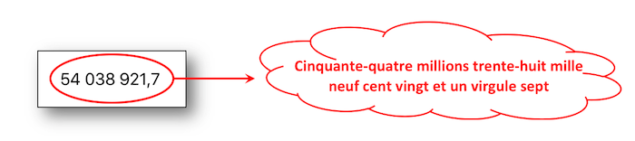
NSNumber * numberValue = @54038921.7;
NSNumberFormatter * numberFormatter = [[NSNumberFormatter alloc]init];
numberFormatter.numberStyle = NSNumberFormatterDecimalStyle;
numberLabel.text = [numberFormatter stringFromNumber:numberValue];
numberLabel.accessibilityLabel = [NSNumberFormatter localizedStringFromNumber:numberValue
numberStyle:NSNumberFormatterSpellOutStyle];
let numberValue = NSNumber(value: 54038921.7)
numberLabel.text = NumberFormatter.localizedString(from: numberValue,
number: .decimal)
numberLabel.accessibilityLabel = NumberFormatter.localizedString(from: numberValue,
number: .spellOut)
let numberValue = NSNumber(value: 54038921.7)
var body: some View {
Text(NumberFormatter.localizedString(from: numberValue, number: .decimal))
.accessibilityLabel(NumberFormatter.localizedString(from: numberValue, number: .spellOut))
}
La problématique liée à la vocalisation d'un numéro de téléphone est identique à celle des nombres puisqu'elle s'appuie entièrement sur le formatage à appliquer avec une prise en compte particulière des chiffres "0".
L'exemple donné ci-dessous concerne la numérotation française avec une logique qui peut se décliner à n'importe quel type de format de numérotation.
L'idée est de séparer chaque paire de chiffres par une virgule qui va fournir la ponctuation vocale.
NSString * phoneNumberValue = @"06.11.22.33.06";
NSArray * phoneNumberElts = [phoneNumberValue componentsSeparatedByString:@"."];
NSNumberFormatter * nbFormatter = [[NSNumberFormatter alloc]init];
nbFormatter.numberStyle = NSNumberFormatterSpellOutStyle;
NSMutableString * spelledOutString = [[NSMutableString alloc]init];
[phoneNumberElts enumerateObjectsUsingBlock:^(id _Nonnull obj,
NSUInteger idx,
BOOL * _Nonnull stop) {
NSString * elt = (NSString *)obj;
if (idx != 0) {
[spelledOutString appendString:@","];
}
if ([elt hasPrefix:@"0"]) {
NSString * firstFigure = [nbFormatter stringFromNumber:@([[elt substringToIndex:1] integerValue])];
NSString * secondFigure = [nbFormatter stringFromNumber:@([[elt substringFromIndex:1] integerValue])];
[spelledOutString appendString:firstFigure];
[spelledOutString appendString:secondFigure];
} else {
[spelledOutString appendString:[nbFormatter stringFromNumber:@([elt integerValue])]];
}
}];
phoneNumberLabel.text = phoneNumberValue;
phoneNumberLabel.accessibilityLabel = spelledOutString;
let phoneNumberValue = "06.11.22.33.06"
let phoneNumberElts = phoneNumberValue.components(separatedBy: ".")
let nbFormatter = NumberFormatter()
nbFormatter.numberStyle = .spellOut
var spelledOutString = String()
for (index, elt) in phoneNumberElts.enumerated() {
if (index != 0) {
spelledOutString.append(",")
}
if (elt.hasPrefix("0")) {
let firstFigureValue = Int(String(elt[elt.startIndex]))!
let firstFigure = nbFormatter.string(from: NSNumber(value:firstFigureValue))
spelledOutString.append(firstFigure!)
let secondFigureValue = Int(String(elt[elt.index(elt.startIndex, offsetBy: 1)]))!
let secondFigure = nbFormatter.string(from: NSNumber(value:secondFigureValue))
spelledOutString.append(secondFigure!)
} else {
let figure = nbFormatter.string(from: NSNumber(value:Int(elt)!))
spelledOutString.append(figure!)
}
}
phoneNumberLabel.text = phoneNumberValue
phoneNumberLabel.accessibilityLabel = spelledOutString
Déclencher une vocalisation #
Pour déclencher une vocalisation qui se fera dans la langue du système, il faut envoyer une notification à l’API d’accessibilité via la méthode UIAccessibilityPostNotification avec en paramètres :
-
la notification permettant de déclencher une vocalisation UIAccessibilityAnnouncementNotification,
-
la chaîne de caractères à vocaliser.
UIAccessibilityPostNotification(UIAccessibilityAnnouncementNotification,
@"Message pour la vocalisation.");
UIAccessibility.post(notification: .announcement,
argument: "Message pour la vocalisation.")
// À appeler par exemple dans un .onAppear{} ou .task{}, avec un délai dans la main Dispatch Queue
UIAccessibility.post(notification: .announcement,
argument: "Message pour la vocalisation.")
Informer d’une modification sur la page #
Lors d’un changement de contenu sur une page, il est primordial de notifier l’API d’accessibilité de ce changement à travers différentes notifications.
Pour ce faire, il faut envoyer une notification de modification à l’API d’accessibilité via la méthode UIAccessibilityPostNotification.
Il existe plusieurs notifications de modification, mais les deux plus utiles sont :
-
UIAccessibilityLayoutChangedNotification : permet de spécifier à l’API d’accessibilité qu’une partie de la page a été modifiée et doit être accompagné d'un
NSStringou d'unUIObject.
Avec unNSString, la notification se comporte comme une UIAccessibilityAnnouncementNotification et lance une vocalisation VoiceOver.
Avec unUIObject, le focus est repositionné sur l’élément précisé.
Cette notification est très similaire à UIAccessibilityAnnouncementNotification mais son utilisation doit être mise en avant dès lors qu'une modification dynamique du contenu se produit, -
UIAccessibilityScreenChangedNotification : permet d’annoncer un changement global de la page et accepte soit
nil, soit l’élément qui doit recevoir le focus.
Avecnil, la notification vocalise et sélectionne le premier élément accessible de la page.
Avec unUIObject, le focus est repositionné sur l’élément précisé en lançant une vocalisation VoiceOver.
Le son utilisé pour notifier la modification est similaire à l'arrivée d'une nouvelle page.
//L'élément 'myLabel' est sélectionné et vocalisé avec sa nouvelle valeur.
- (IBAction)tapHere:(UIButton *)sender {
myLabel.accessibilityLabel = @"Ceci est un nouveau label.";
UIAccessibilityPostNotification(UIAccessibilityLayoutChangedNotification, myLabel);
}
//Le premier élément accessible de la page est sélectionné et vocalisé avec un son spécifique.
- (IBAction)clic:(UIButton *)sender {
UIAccessibilityPostNotification(UIAccessibilityScreenChangedNotification, nil);
}
//L'élément 'myLabel' est sélectionné et vocalisé avec sa nouvelle valeur.
@IBAction func tapHere(_ sender: UIButton) {
myLabel.accessibilityLabel = "Ceci est un nouveau label."
UIAccessibility.post(notification: UIAccessibility.Notification.layoutChanged,
argument: myLabel)
}
//Le premier élément accessible de la page est sélectionné et vocalisé avec un son spécifique.
@IBAction func clic(_ sender: UIButton) {
//Cette API peut être utilisée autant pour des projets UIKit que pour des projets SwiftUI
UIAccessibility.post(notification: UIAccessibility.Notification.screenChanged,
argument: nil)
}
Modifier la langue de vocalisation #
Afin de modifier la langue de prononciation de VoiceOver pour un mot ou un texte, il existe l’attribut accessibilityLanguage.
Disponible via le protocole UIAccessibility, cet attribut permet de redéfinir la langue de prononciation d’un texte.
Si on utilise l'attribut accessibilityLanguage sur un UILabel, alors celui-ci sera vocalisé par VoiceOver dans la nouvelle langue donnée en valeur de l’attribut.
- (IBAction)tapHere:(UIButton *)sender {
myLabel.accessibilityLanguage = @"en";
myLabel.accessibilityLabel = @"This is a new label. Thank you.";
}
@IBAction func tapHere(_ sender: UIButton) {
//accessibilityLanguage n'est pas encore disponible dans SwiftUI (seulement UIKit et AppKit)
myLabel.accessibilityLanguage = "en"
myLabel.accessibilityLabel = "This is a new label. Thank you."
}
Si l'on souhaite ajouter un mot dans une langue spécifique au sein d'une phrase à prononcer de façon appropriée avec VoiceOver, on peut s'appuyer sur les Attributed Accessibility Properties en utilisant un NSAttributedString depuis iOS 11.
Masquer des éléments #
Il est possible de masquer des éléments aux outils d’accessibilité grâce aux attributs d’accessibilité mais aussi de forcer certains éléments à être visibles pour les outils d’accessibilité uniquement.
-
isAccessibilityElement : booléen qui permet d’indiquer qu’un élément est visible ou non de l’API d’accessibilité (de VoiceOver ou autre).
-
accessibilityElementsHidden : booléen qui permet d’indiquer que les éléments fils de l’élément cible sont visibles ou non de l’API d’accessibilité.
-
accessibilityViewIsModal : booléen qui permet de rendre visible ou non les éléments frères de l’élément cible à l’API d’accessibilité.
Une explication théorique et une application pratique de cette propriété sont fournies par une vidéo détaillée dans la partie WWDC de ce site.
L’attribut isAccessibilityElement est disponible via l’interface builder de Xcode mais est également utilisable directement via le code alors que les deux autres attributs sont utilisables uniquement via le code.
L'idée est de créer un carré rouge qui va contenir 2 autres carrés (bleu et jaune) pour appliquer les attributs définis dans l'onglet Fonctionnement.

- (void)viewDidAppear:(BOOL)animated {
[super viewDidAppear:animated];
//Création d'un élément père dans lequel 2 autres éléments fils vont être insérés.
CGRect redParentViewRect = CGRectMake(100.0, 100.0, 40.0, 40.0);
UIView * myRedParentView = [[UIView alloc]initWithFrame:redParentViewRect];
myRedParentView.backgroundColor = [UIColor redColor];
[self.view addSubview:myRedParentView];
//L'élément père ne doit pas être accessible pour servir de conteneur à ses enfants.
//Si la valeur est à 'YES', seul cet élément sera accessible sans ses enfants.
myRedParentView.isAccessibilityElement = NO;
//Indication du conteneur que ses enfants peuvent ne pas être accessibles même s'ils sont définis comme tels.
//Si cette valeur est à 'NO' et la précédente à 'NO', seuls ces élements seront accessibles.
myRedParentView.accessibilityElementsHidden = NO;
[self createViewWithColor:[UIColor yellowColor]
inside:myRedParentView];
[self createViewWithColor:[UIColor blueColor]
inside:myRedParentView];
}
- (void)createViewWithColor:(UIColor*)color
inside:(UIView*)parentView {
float delta = (color == [UIColor yellowColor]) ? 0.0 : 20.0;
CGRect rect = CGRectMake(10.0 + delta, 10.0 + delta, 10.0, 10.0);
UIView * theView = [[UIView alloc]initWithFrame:rect];
theView.backgroundColor = color;
[parentView addSubview:theView];
theView.isAccessibilityElement = YES;
}
override func viewDidAppear(_ animated: Bool) {
super.viewDidAppear(animated)
//Création d'un élément père dans lequel 2 autres éléments fils vont être insérés.
let redParentViewRect = CGRect.init(x: 100.0,
y: 100.0,
width: 40.0,
height: 40.0)
let myRedParentView = UIView.init(frame: redParentViewRect)
myRedParentView.backgroundColor = .red
self.view.addSubview(myRedParentView)
//L'élément père ne doit pas être accessible pour servir de conteneur à ses enfants.
//Si la valeur est à 'true', seul cet élément sera accessible sans ses enfants.
myRedParentView.isAccessibilityElement = false
//Indication du conteneur que ses enfants peuvent ne pas être accessibles même s'ils sont définis comme tels.
//Si cette valeur est à 'false' et la précédente à 'false', seuls ces élements seront accessibles.
myRedParentView.accessibilityElementsHidden = false
self.createViewWithColor(.yellow, inside: myRedParentView)
self.createViewWithColor(.blue, inside: myRedParentView)
}
func createViewWithColor(_ color:UIColor, inside parentView:UIView) {
let delta:CGFloat = ((color == .yellow) ? 0.0 : 20.0)
let rect = CGRect.init(x: 10.0 + delta,
y: 10.0 + delta,
width: 10.0,
height: 10.0)
let theView = UIView.init(frame: rect)
theView.backgroundColor = color
parentView.addSubview(theView)
theView.isAccessibilityElement = true
}
var body: some View {
VStack {
Text("Du texte dans un containeur")
.accessibilityHidden(true) // Cache de Voice Over, ne l'est pas par défaut
Rectangle()
.fill(Color.yellow)
.frame(width: 40, height: 40)
.accessibilityHidden(false) // Cet item n'est pas accessible
Rectangle()
.fill(Color.blue)
.frame(width: 40, height: 40)
.accessibilityHidden(false) // Cet item n'est pas accessible
Spacer()
}
.background(Color.green)
.frame(width: 500, height: 500)
// Indique que le containeur est accessible mais pas les enfants (i.e. accessibilityElement(children: .ignore)
.accessibilityElement()
// Ou indique que le containeur contient des élements accessibles sur lesquels itérer individuellement
.accessibilityElement(children: .contain)
// Ou indique que le containeur contient des élements accessibles mais que c'est l'ensemble qu'il faut traiter
.accessibilityElement(children: .combine)
}
Grouper des éléments #
On peut envisager de grouper des éléments pour vocaliser en une seule fois l'ensemble formé et associer au groupe ainsi créé une action dédiée par exemple.
Dès lors, les éléments encapsulés ne doivent plus être considérés comme accessibles car seul leur conteneur doit être perçu comme tel.
Nous avons un 'label' et un 'switch control' que nous souhaitons regrouper et traiter d'un seul bloc.
Dans ce cas, on va créer une vue qui va englober les éléments impactés puis implémenter une action qui va indiquer l'action à réaliser en cas d'activation de la zone par l'utilisateur.
Création de l'élément accessible qui va regrouper les éléments souhaités après avoir décoché la case Accessibility Enabled dans le storyboard pour les éléments label et switch :
#import "MyViewController.h"
#import "MyWrapView.h"
@interface MyViewController ()
@property (weak, nonatomic) IBOutlet UILabel * myLabel;
@property (weak, nonatomic) IBOutlet UISwitch * mySwitch;
@end
@implementation MyViewController
- (void)viewDidAppear:(BOOL)animated {
[super viewDidAppear:animated];
//Création de la vue qui va encapsuler le 'label' et le 'Switch Control'.
MyWrapView * wrap = [[MyWrapView alloc] initWith:_myLabel
and:_mySwitch];
[self.view addSubview:wrap];
}
@end
class MyViewController: UIViewController {
@IBOutlet weak var myLabel: UILabel!
@IBOutlet weak var mySwitch: UISwitch!
override func viewDidAppear(_ animated: Bool) {
super.viewDidAppear(animated)
//Création de la vue qui va encapsuler le 'label' et le 'Switch Control'.
let wrap = MyWrapView.init(with: myLabel,
and: mySwitch)
self.view.addSubview(wrap)
}
}
@State private var isChecked = false // valeur du switch par défaut
HStack(){
Text("Texte descriptif")
Toggle("Test", isOn: $isChecked)
}
.accessibilityElement(children: .combine)
.accessibilityHint("Texte descriptif groupé avec le bouton")
... et implémentation de la classe utilisée pour définir de façon précise l'action à associer au double tap d'activation :
@implementation MyWrapView
//Index utilisés pour repérer les éléments accessibles dans la vue de regroupement.
int indexLabel = 0;
int indexSwitch = 1;
- (instancetype)initWith:(UILabel *)label and:(UISwitch *)aSwitch {
CGRect viewFrame = CGRectUnion(label.frame, aSwitch.frame);
MyWrapView * wrapView = [[MyWrapView alloc]initWithFrame:viewFrame];
//L'élément natif ci-dessous est utilisé pour stocker des éléments non accessibles et les atteindre de n'importe où.
//Ce choix est fait pour alléger le code et éviter de créer un autre tableau pour atteindre le même objectif.
//Il n'est pas recommandé de suivre cette voie dans une application distribuée.
wrapView.accessibilityElements = @[label, aSwitch];
NSString * switchValue = (aSwitch.isOn) ? @"activé" : @"désactivé";
wrapView.isAccessibilityElement = YES;
wrapView.accessibilityLabel = [NSString stringWithFormat:@"le contrôle est %@", switchValue.description];
wrapView.accessibilityHint = @"tapez deux fois pour changer sa valeur";
return wrapView;
}
//Fonction appelée par le système quand un double tap est réalisé sur l'élément sélectionné pour l'activer.
- (BOOL)accessibilityActivate {
UISwitch * theSwitch = self.accessibilityElements[indexSwitch];
[theSwitch setOn:!(theSwitch.isOn)];
NSString * switchValue = (theSwitch.isOn) ? @"activé" : @"désactivé";
self.accessibilityLabel = [NSString stringWithFormat:@"le contrôle est %@", switchValue.description];
return YES;
}
@end
class MyWrapView: UIView {
//Index utilisés pour repérer les éléments accessibles dans la vue de regroupement.
let indexLabel = 0
let indexSwitch = 1
override init(frame: CGRect) {
super.init(frame: frame)
}
required init?(coder aDecoder: NSCoder) {
super.init(coder: aDecoder)
}
convenience init(with label: UILabel,and aSwitch: UISwitch) {
let viewFrame = label.frame.union(aSwitch.frame)
self.init(frame: viewFrame)
//L'élément natif ci-dessous est utilisé pour stocker des éléments non accessibles et les atteindre de n'importe où.
//Ce choix est fait pour alléger le code et éviter de créer un autre tableau pour atteindre le même objectif.
//Il n'est pas recommandé de suivre cette voie dans une application distribuée.
self.accessibilityElements = [label, aSwitch]
let switchValue = (aSwitch.isOn) ? "activé" : "désactivé"
self.isAccessibilityElement = true
self.accessibilityLabel = "le contrôle est " + switchValue.description
self.accessibilityHint = "tapez deux fois pour changer sa valeur."
}
//Fonction appelée par le système quand un double tap est réalisé sur l'élément sélectionné pour l'activer.
override func accessibilityActivate() -> Bool {
let theSwitch = self.accessibilityElements?[indexSwitch] as? UISwitch
theSwitch?.setOn(!((theSwitch?.isOn)!), animated: false)
let switchValue = (theSwitch?.isOn)! ? "activé" : "désactivé"
self.accessibilityLabel = "le contrôle est" + switchValue.description
return true
}
}
@State var isChecked = false
var body: some View {
HStack(){
Text("Texte descriptif : " + (isChecked ? "activé" : "désactivé"))
Toggle("Test", isOn: $isChecked)
}
.accessibilityElement(children: .combine)
.accessibilityHint("Texte descriptif groupé avec le bouton")
.accessibilityAction {
print("Action déclenchée au double tap")
isChecked.toggle()
}
}
Nous avons un 'label', un 'switch control' et un bouton que nous souhaitons regrouper en un seul bloc dont l'activation changera automatiquement l'état du 'switch control' sans avoir à définir une action comme précédemment.
L'idée la plus simple consisterait à placer le 'switch control' au milieu de la nouvelle frame créée de façon à avoir son directement dessus.
Cela n'étant malheureusement pas toujours possible, il va donc falloir créer un élément accessible qui regroupera tous les objets impactés puis définir son accessibilityActivationPoint sur le 'switch control'.
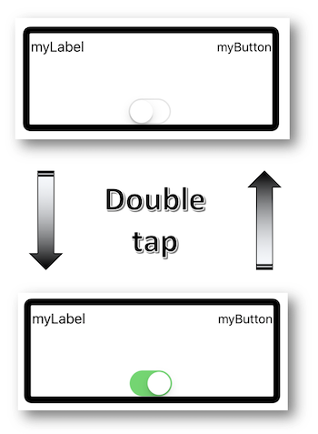
@interface ActivationPointViewController ()
@property (weak, nonatomic) IBOutlet UIButton * myButton;
@property (weak, nonatomic) IBOutlet UILabel * myLabel;
@property (weak, nonatomic) IBOutlet UISwitch * mySwitch;
@end
@implementation ActivationPointViewController
UIAccessibilityElement * elt;
- (void)viewDidAppear:(BOOL)animated {
[super viewDidAppear:animated];
[_mySwitch addTarget:self
action:@selector(configChanged:)
forControlEvents:UIControlEventValueChanged];
elt = [[UIAccessibilityElement alloc]initWithAccessibilityContainer:self.view];
CGRect a11yFirstEltFrame = CGRectUnion(_myLabel.frame, _myButton.frame);
CGRect a11yEltFrame = CGRectUnion(a11yFirstEltFrame, _mySwitch.frame);
elt.accessibilityLabel = @"regroupement d'éléments";
elt.accessibilityHint = @"tapez deux fois pour modifier le switch";
elt.accessibilityFrameInContainerSpace = a11yEltFrame;
elt.accessibilityActivationPoint = [_mySwitch center];
self.view.accessibilityElements = @[elt];
}
- (void)configChanged:(UISwitch *)sender {
NSString * switchValue = _mySwitch.on ? @"activé" : @"désactivé";
elt.accessibilityLabel = [NSString stringWithFormat:@"le contrôle est %@", switchValue.description];
}
@end
class ActivationPointViewController: UIViewController {
@IBOutlet weak var myButton: UIButton!
@IBOutlet weak var myLabel: UILabel!
@IBOutlet weak var mySwitch: UISwitch!
var elt: UIAccessibilityElement?
override func viewDidAppear(_ animated: Bool) {
super.viewDidAppear(animated)
mySwitch.addTarget(self,
action: #selector(configChanged),
for: .valueChanged)
elt = UIAccessibilityElement(accessibilityContainer: self.view!)
let a11yEltFrame = (myLabel.frame.union(myButton.frame)).union(mySwitch.frame)
if let elt = elt {
elt.accessibilityLabel = "regroupement d'éléments"
elt.accessibilityHint = "tapez deux fois pour modifier le switch"
elt.accessibilityFrameInContainerSpace = a11yEltFrame
elt.accessibilityActivationPoint = mySwitch.center
self.view.accessibilityElements = [elt]
}
}
@objc func configChanged(sender: UISwitch){
if let configGroup = elt {
let switchValue = (mySwitch?.isOn)! ? "activé" : "désactivé"
configGroup.accessibilityLabel = "le contrôle est " + switchValue.description
}
}
}
Une autre possibilité de groupement d'éléments pourrait utiliser l’attribut shouldGroupAccessibilityChildren, booléen qui permet d’indiquer à VoiceOver qu’il doit grouper les enfants de la vue qui porte l’attribut.
Cela permet notamment de faire des vocalisations uniques ou de définir un ordre de lecture VoiceOver particulier pour une partie de la page seulement (voir la section Ordre de lecture).
Ordre de lecture #
Redéfinir l’ordre de lecture pour VoiceOver s’effectue en respectant le protocole UIAccessibilityContainer.
L’idée est d’avoir un tableau des éléments de la vue qui définit l’ordre de lecture des éléments.
Il est bien souvent nécessaire d’utiliser l’attribut shouldGroupAccessibilityElement afin d’avoir un ordre précis mais pour une partie seulement de la vue (le reste étant l’ordre naturel de lecture proposé par VoiceOver).
Le meilleur exemple pour illustrer cette fonctionnalité est le clavier pour lequel les touches sucessives ne suivent pas forcément l'ordre natif proposé par VoiceOver.
Dans cet exemple, on veut l'ordre suivant : 1, 2, 3, 4, 7, 5, 6, 8, 9.
On crée deux vues au sein desquelles on incorpore les chiffres qu'on souhaite vocaliser selon un ordre bien précis :

__weak IBOutlet UIView * blueBlock;
__weak IBOutlet UIView * greyColumn;
- (void)viewDidAppear:(BOOL)animated {
[super viewDidAppear:animated];
//Lecture des 3 premiers nombres dans la vue grise.
greyColumn.shouldGroupAccessibilityChildren = YES;
// Lecture des chiffres 6, 8, 9 et 5 au sein du bloc bleu.
blueBlock.isAccessibilityElement = NO;
blueBlock.accessibilityElements = @[key_5,
key_6,
key_8,
key_9];
}
@IBOutlet weak var greyColumn: UIView!
@IBOutlet weak var blueBlock: UIView!
override func viewDidAppear(_ animated: Bool) {
super.viewDidAppear(animated)
//Lecture des 3 premiers nombres dans la vue grise.
greyColumn.shouldGroupAccessibilityChildren = true
// Lecture des chiffres 6, 8, 9 et 5 au sein du bloc bleu.
blueBlock.isAccessibilityElement = false
blueBlock.accessibilityElements = [key_5!,
key_6!,
key_8!,
key_9!]
}
var body: some View {
// Plus la priorité est elevée, plus tôt sera vocalisé l'élément
HStack {
VStack { // On suit l'ordre naturel du containeur gris
Text("1") // Position 1
Text("2") // Position 2
Text("3") // Position 3
}.accessibilitySortPriority(1000)
VStack { // deuxième colonne
Text("4").accessibilitySortPriority(900) // Position 4
Text("5").accessibilitySortPriority(400) // Position 6
Text("6").accessibilitySortPriority(700) // Position 7
}
VStack { // troisième colonne
Text("7").accessibilitySortPriority(800) // Position 5
Text("8").accessibilitySortPriority(600) // Position 8
Text("9").accessibilitySortPriority(500) // Position 9
}
}.accessibilityElement(children: .contain)
}
Fournisseur de contenu personnalisé #
Cette nouveauté iOS 14 passée incognito lors de la WWDC 2020 est pourtant véritablement essentielle pour améliorer de façon significative le confort d'utilisation de VoiceOver... même si une présentation dédiée a été réalisée tardivement lors de la WWDC 2021.
L'objectif principal du fournisseur de contenu personnalisé réside dans une navigation plus rapide au sein d'une interface riche en détails auxquels l'utilisateur peut accéder sans être obligé de subir la vocalisation d'éléments parasites avant d'obtenir ce qui l'intéresse.
L'association d'une vocalisation souhaitée de l'information (visuelle ou non) avec une navigation plus fluide et plus rapide caractérise donc parfaitement la finalité de cette fonctionnalité.
Un exemple probant est celui de l'application Photos où cette fonctionnalité permet l'accès à certaines métadonnées (date, heure...) en ayant toujours la photo sélectionnée : ces informations sont accessibles via l'item Plus de contenus présent dans le rotor.
On peut aussi envisager l'implémentation de cette fonctionnalité dans des listes de cellules comprenant de nombreux détails dont la vocalisation pourrait être réalisée uniquement par ce biais selon l'intérêt manifesté par l'utilisateur.
Pour utiliser cette fonctionnalité avec UIKit, il est impératif de :
-
se conformer au protocole AXCustomContentProvider,
-
fournir un tableau accessibilityCustomContent rempli d'éléments AXCustomContent,
-
définir chaque élément AXCustomContent avec sa caractéristique (
value) ainsi que la famille à laquelle elle appartient (label).
Concernant SwiftUI, l'usage est bien plus simple sans utilisation de AXCustomContentProvider ni de l'API Accessibility.
L'accès à ces informations se fait en utilisant le rotor qui contiendra alors un item Plus de contenus qui permettra de vocaliser chaque AXCustomContent par un balayage vertical avec un doigt comme pour les valeurs continûment ajustables ou les actions personnalisées.
L'exemple de code ci-dessous permet d'obtenir tout un tas d'informations présentes sur une image sous forme de données non visuelles mais vocalisables.
⚠️ Il faut absolument penser à importer le framework Accessibility auquel appartient le protocole AXCustomContentProvider.
Après avoir défini la classe pour la vue contenant l'image :
//MyCustomView.h
#import <UIKit/UIKit.h>
#import <Accessibility/Accessibility.h> //Oubli rédhibitoire
@interface MyCustomView: UIImageView <AXCustomContentProvider>
@end
//MyCustomView.m
@implementation MyCustomView
@synthesize accessibilityCustomContent = _accessibilityCustomContent;
- (void)setAccessibilityCustomContent:(NSArray *)accessibilityCustomContent {
if (accessibilityCustomContent != nil) {
_accessibilityCustomContent = accessibilityCustomContent;
}
}
@end
import Accessibility //Oubli rédhibitoire
class MyCustomView: UIImageView, AXCustomContentProvider {
var _accessibilityCustomContent: [AXCustomContent]? = nil
var accessibilityCustomContent: [AXCustomContent]! {
get { return _accessibilityCustomContent }
set(newValue) { _accessibilityCustomContent = newValue }
}
}
var body: some View {
Image(...)
.accessibilityLabel("logo Orange")
.accessibilityHint("utiliser l'élément du rotor intitulé plus de contenus pour obtenir des informations complémentaires")
.accessibilityCustomContent(AccessibilityCustomContentKey("date de création"), Text("1988"))
.accessibilityCustomContent(AccessibilityCustomContentKey("siège social"), Text("paris"))
.accessibilityCustomContent(AccessibilityCustomContentKey("type de société"), Text("télécommunications"))
}
... on crée chaque élément à vocaliser lors du balayage vertical avec un doigt :
@interface ViewController ()
@property (weak, nonatomic) IBOutlet MyCustomView * myView;
@end
@implementation ViewController
- (void)viewDidAppear:(BOOL)animated {
[super viewDidAppear:animated];
_myView.accessibilityLabel = @"logo Orange";
_myView.accessibilityHint = @"utiliser l'élément du rotor intitulé plus de contenus pour obtenir des informations complémentaires";
AXCustomContent * lastModified = [AXCustomContent customContentWithLabel:@"date de création"
value:@"1988"];
AXCustomContent * items = [AXCustomContent customContentWithLabel:@"siège social"
value:@"paris"];
AXCustomContent * type = [AXCustomContent customContentWithLabel:@"type de société"
value:@"télécommunications"];
_myView.accessibilityCustomContent = @[lastModified, items, type];
}
@end
class ViewController: UIViewController {
@IBOutlet weak var myView: MyCustomView!
override func viewDidAppear(_ animated: Bool) {
super.viewDidAppear(animated)
myView.accessibilityLabel = "logo Orange"
myView.accessibilityHint = "utiliser l'élément du rotor intitulé plus de contenus pour obtenir des informations complémentaires"
let lastModified = AXCustomContent(label: "date de création",
value: "1988")
let items = AXCustomContent(label: "siège social",
value: "paris")
let type = AXCustomContent(label: "type de société",
value: "télécommunications")
myView.accessibilityCustomContent = [lastModified, items, type]
}
}
Exemple d'utilisation :
Sur le logo de la marque Orange, il est possible d'ajouter du contenu personnalisé consultable à l'aide de l'option "Plus de contenu" du rotor.
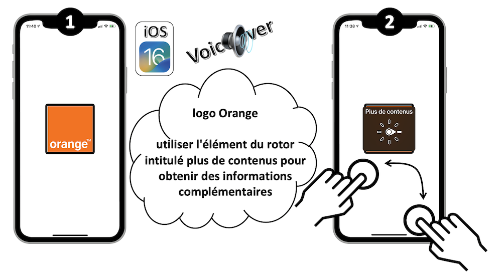
En utilisant le balayage vertical avec un doigt, il est possible d'entendre "Télécommunications type de société, Paris siège social, 1988 date de création"
-
L'article de Rob Whitaker apporte une belle description pédagogique de cette nouvelle fonctionnalité qu'il est un des seuls à avoir exposé à l'issue de la WWDC 2020.
-
WWDC 2021 : Optimiser VoiceOver dans un contexte riche en données.
Focus d'un élément #
Le protocole informel UIAccessibilityFocus fournit des éléments de programmation efficaces de façon à pouvoir être informé d'une sélection passée, active ou à venir d'un élément accessible.
-
accessibilityElementDidBecomeFocused : méthode appelée dès que l'élément accessible est sélectionné.
-
accessibilityElementDidLoseFocus : méthode appelée dès que l'élément accessible perd le focus.
-
accessibilityElementIsFocused : valeur booléenne qui permet de savoir si un élément accessible est sélectionné.
Attention, ces méthodes ne sont pas appelées au sein d'un contrôleur de vue si un de ses élements accessibles est sélectionné mais uniquemnet si elles sont implémentées sur l'élément accessible lui-même.
Cette erreur à laquelle on ne pense pas de prime abord provient du caractère informel du protocole UIAccessibilityFocus dont les éléments peuvent subir un override sur tout objet héritant de NSObject même s'il n'est pas accessible... comme un contrôleur de vue par exemple.
L'exemple de code ci-dessous permet de suivre le focus d'un élément accessible identifié par son accessibleIdentifier.
#import "UIView+focus.h"
@implementation UIView (focus)
- (void)accessibilityElementDidBecomeFocused {
if ([self accessibilityElementIsFocused]) {
NSLog(@"Mon élément est sélectionné.");
}
}
- (void)accessibilityElementDidLoseFocus {
if ([self accessibilityElementIsFocused]) {
NSLog(@"Mon élément a perdu le focus.");
}
}
- (BOOL)accessibilityElementIsFocused {
if ([self.accessibilityIdentifier isEqualToString:@"monEltAccessible"]) {
return YES;
} else {
return NO;
}
}
@end
extension UIView {
override open func accessibilityElementDidBecomeFocused() {
if self.accessibilityElementIsFocused() {
print("Mon élément est sélectionné.")
}
}
override open func accessibilityElementDidLoseFocus() {
if self.accessibilityElementIsFocused() {
print("Mon élément a perdu le focus.")
}
}
override open func accessibilityElementIsFocused() -> Bool {
if (self.accessibilityIdentifier == "monEltAccessible") {
return true
} else {
return false
}
}
}
//La propriété wrapper AccessibilityFocusState permet de savoir si l'élément a le focus ou non
struct MyView: View {
@AccessibilityFocusState private var isElementFocused: Bool
@State private var monTexte = ""
var body: some View {
Form {
TextField("Champ d'édition", text: $monTexte)
.accessibilityFocused($isElementFocused)
}
.onChange(of: isElementFocused) { value in
print(value)
}
}
}
// Il est aussi possible de déplacer le focus automatiquement, par exemple ici lorsqu'une notification change
//(exemple à retrouver ici https://developer.apple.com/documentation/swiftui/accessibilityfocusstate)
struct CustomNotification: Equatable {
var text: String
var isPriority: Bool
}
struct ContentView: View {
@Binding var notification: CustomNotification?
@AccessibilityFocusState var isNotificationFocused: Bool
var body: some View {
VStack {
if let notification = self.notification {
Text(notification.text)
.accessibilityFocused($isNotificationFocused)
}
Text("Un peu de texte pour cette vue.")
}
.onChange(of: notification) { notification in
if (notification?.isPriority == true) {
isNotificationFocused = true
}
}
}
}
Modifier la zone de focus de VoiceOver #
Dans le cas d’objet modifié dynamiquement ou d’élément ne dérivant pas de UIView, avec UIKit, il est possible de déterminer la zone géographique d’accessibilité de cet élément, c’est-à-dire la zone que VoiceOver met en surbrillance lors du focus.
-
accessibilityFrame : permet de définir cette zone via un rectangle (
CGRect). Par défaut pour un élément dérivant deUIView, cette zone est la partie « visible » de la vue. -
accessibilityPath : équivalent à
accessibilityFramemais permet de définir la zone via des courbes de Bézier. -
accessibilityActivationPoint : définit un point de contact au sein de la
framedont l'action résultante sera activée par une sélection classique d'élément via un double tap.
Par défaut, ce point se trouve au centre de laframemais on peut le définir n'importe à l'intérieur de cette dernière, l'idée étant de pouvoir activer un élement facilement lors d'un .
En conservant la valeur par défaut de ce point, on peut aisément se retrouver dans une situation où on active involontairement l'élément situé au milieu de la frame uniquement en activant le regroupement créé.
float xVal;
float yVal;
float widthVal;
float heightVal;
- (void)viewDidAppear:(BOOL)animated {
[super viewDidAppear:animated];
xVal = myLabel.accessibilityFrame.origin.x;
yVal = myLabel.accessibilityFrame.origin.y;
widthVal = myLabel.accessibilityFrame.size.width;
heightVal = myLabel.accessibilityFrame.size.height;
}
//Première façon d'augmenter la zone de focus.
- (IBAction)tapHere:(UIButton *)sender {
myLabel.accessibilityFrame = CGRectMake(xVal,
yVal,
widthVal + 100.0,
heightVal+ 100.0);
UIAccessibilityPostNotification(UIAccessibilityLayoutChangedNotification, myLabel);
}
//Seconde façon d'augmenter la zone de focus (Bézier).
- (IBAction)clic:(UIButton *)sender {
UIBezierPath * bezierPath = [UIBezierPath bezierPath];
[bezierPath moveToPoint:CGPointMake(xVal, yVal)];
[bezierPath addLineToPoint:CGPointMake(xVal + widthVal + 100.0,
yVal)];
[bezierPath addLineToPoint:CGPointMake(xVal + widthVal + 100.0,
yVal + heightVal+ 100.0)];
[bezierPath addLineToPoint:CGPointMake(xVal,
yVal + heightVal+ 100.0)];
[bezierPath closePath];
myLabel.accessibilityPath = bezierPath;
UIAccessibilityPostNotification(UIAccessibilityLayoutChangedNotification, myLabel);
}
var xVal: CGFloat = 0.0
var yVal: CGFloat = 0.0
var widthVal: CGFloat = 0.0
var heightVal: CGFloat = 0.0
override func viewDidAppear(_ animated: Bool) {
super.viewDidAppear(animated)
xVal = myLabel.accessibilityFrame.origin.x;
yVal = myLabel.accessibilityFrame.origin.y;
widthVal = myLabel.accessibilityFrame.size.width;
heightVal = myLabel.accessibilityFrame.size.height;
}
//Première façon d'augmenter la zone de focus.
@IBAction func clicHere(_ sender: UIButton) {
myLabel.accessibilityFrame = CGRect.init(x: xVal,
y: yVal,
width: widthVal + 100.0,
height: heightVal + 100.0)
UIAccessibility.post(notification: UIAccessibility.Notification.layoutChanged,
argument: myLabel)
}
//Seconde façon d'augmenter la zone de focus (Bézier).
@IBAction func clic(_ sender: UIButton) {
let bezierPath = UIBezierPath.init()
bezierPath.move(to: CGPoint.init(x: xVal, y: yVal))
bezierPath.addLine(to: CGPoint.init(x: xVal + widthVal + 100.0,
y: yVal))
bezierPath.addLine(to: CGPoint.init(x: xVal + widthVal + 100.0,
y: yVal + heightVal + 100.0))
bezierPath.addLine(to: CGPoint.init(x: xVal,
y: yVal + heightVal + 100.0))
bezierPath.close()
myLabel.accessibilityPath = bezierPath
UIAccessibility.post(notification: UIAccessibility.Notification.screenChanged,
argument: myLabel)
}
Text("Simple text ayant besoin d'une zone de focus Voice Over plus grande")
.border(Color.red)
.padding()
// Ajouter un overlay va permettre d'aggrandir la zone
.overlay(
Rectangle()
// On aggrandit ainsi la zone
.stroke(Color.clear, lineWidth: 20)
// Une autre manière d'aggrandir la zone
.padding(-20)
)
.border(Color.blue)
.accessibilityElement()
Vue modale #
Quand on souhaite que le lecteur d'écran ne puisse voir et vocaliser qu'une seule et unique vue mise en avant (alertes, popups...) alors que d'autres éléments sont toujours présents en arrière-plan, il faut absolument utiliser la propriété accessibilityViewIsModal qui va focaliser VoiceOver sur l'instance possédant cette propriété à la valeur 'true'.
En fonction de la hiérarchie des vues implémentée au sein d'une application, le simple fait d'écrire accessibilityViewIsModal = true risque de ne pas produire toujours l'effet escompté en vocalisant certains éléments situés en arrière-plan.
En effet, seuls les éléments accessibles situés au même niveau hiérarchique que la vue impactée sur laquelle cette propriété sera activée seront exclus de l'analyse VoiceOver.
Les exemples développés par la suite supposent acquises les connaissances concernant l'affichage/masquage des conteneurs et de leurs contenus : se référer à la rubrique Masquer des éléments pour approfondir ces notions si besoin.
Pour application, supposons que nous avons une vue générique contenant des éléments tous accessibles :
-
Une première vue (parent A) avec 3 sous-vues (A1, A2, A3).
-
Une seconde vue (parent B) avec un premier niveau (B1 et B2) possédant lui-même des sous-vues (B1.1, B1.2, B2.1, B2.2 et B3.3).

Exemple 1 : passer Parent A en vue modale.
Sachant que Parent A et Parent B sont au même niveau de la hiérarchie des vues, le simple fait d'activer accessibilityViewIsModal sur Parent A permet d'obtenir le résulat souhaité.
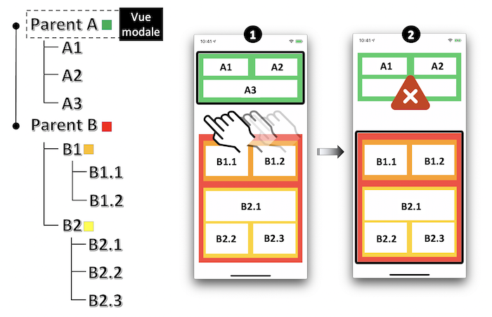
Exemple 2 : passer A2 en vue modale.
Les vues A1 et A3 ne sont pas prises en compte par VoiceOver car elles sont au même niveau de la hiérarchie des vues que A2 MAIS Parent B (ou éventuellement ses sous-vues) sera vocalisé... ce qui n'est pas souhaité.
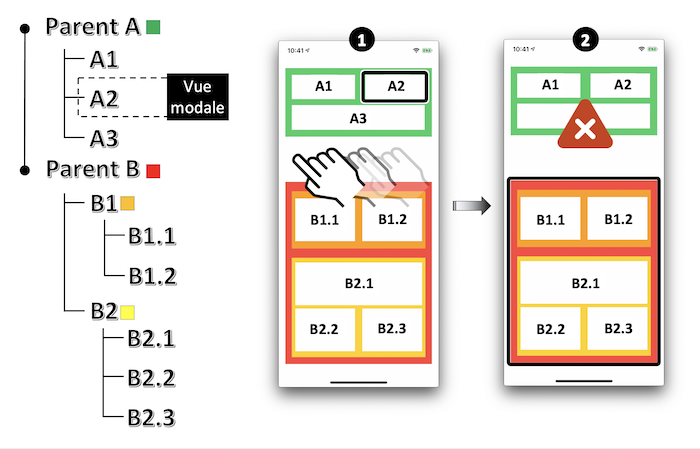
Pour solutionner ce problème, l'idée est de masquer les éléments non désirables dès lors qu'on active la vue modale.
parentA.isAccessibilityElement = NO;
parentA.accessibilityElementsHidden = NO;
A2.accessibilityViewIsModal = YES;
//Résout le problème de Parent B et de ses sous-vues.
parentB.isAccessibilityElement = NO;
parentB.accessibilityElementsHidden = YES;
parentA.isAccessibilityElement = false
parentA.accessibilityElementsHidden = false
A2.accessibilityViewIsModal = true
//Résout le problème de Parent B et de ses sous-vues.
parentB.isAccessibilityElement = false
parentB.accessibilityElementsHidden = true
// Parent A
VStack {
Text("A1")
Text("A2").accessibilityAddTraits(.isModal)
Text("A3")
}.background(Color.green)
// Parent B
VStack {
// B1
HStack {
Text("B1.1")
Text("B1.2")
}.background(Color.orange)
// B2
VStack {
Text("B2.1")
Text("B2.2")
Text("B2.3")
}.background(Color.yellow)
}.background(Color.red)
/*
Par défaut SwiftUI, les vues parents A et B ne sont pas accessible et sont cachées de Voice Over,
la logique est différente de celle de l'implémentation UIKit.
Ne pas oublier par la suite de retirer le trait donné si besoin.
*/
Exemple 3 : passer B1.1 en vue modale.
Dans ce cas, les vues parent A et B2 (ou éventuellement leurs sous-vues) sont vocalisées tout comme la vue modale.
Seule B1.2 qui est au même niveau que B1.1 n'est pas analysée par VoiceOver.
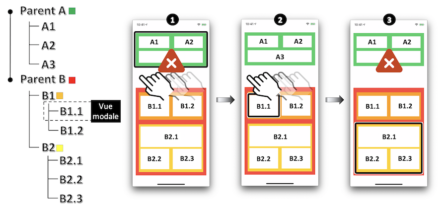
Là encore, il faut masquer tous les éléments accessibles non désirables dès lors qu'on active la vue modale.
parentB.isAccessibilityElement = NO;
parentB.accessibilityElementsHidden = NO;
B1.isAccessibilityElement = NO;
B1.accessibilityElementsHidden = NO;
B11.accessibilityViewIsModal = YES;
//Résout le problème de Parent A et de B2.
parentA.isAccessibilityElement = NO;
parentA.accessibilityElementsHidden = YES;
B2.isAccessibilityElement = NO;
B2.accessibilityElementsHidden = YES;
parentB.isAccessibilityElement = false
parentB.accessibilityElementsHidden = false
B1.isAccessibilityElement = false
B1.accessibilityElementsHidden = false
B11.accessibilityViewIsModal = true
//Résout le problème de Parent A et de B2.
parentA.isAccessibilityElement = false
parentA.accessibilityElementsHidden = true
B2.isAccessibilityElement = false
B2.accessibilityElementsHidden = true
// Parent A
VStack {
Text("A1")
Text("A2")
Text("A3")
}.background(Color.green)
// Parent B
VStack {
// B1
HStack {
Text("B1.1").accessibilityAddTraits(.isModal)
Text("B1.2")
}.background(Color.orange)
// B2
VStack {
Text("B2.1")
Text("B2.2")
Text("B2.3")
}.background(Color.yellow)
}.background(Color.red)
/*
Par défaut SwiftUI, les vues parents A et B ne sont pas accessible et sont cachées de Voice Over,
la logique est différente de celle de l'implémentation UIKit.
Ne pas oublier par la suite de retirer le trait donné si besoin.
*/
Taille des textes #

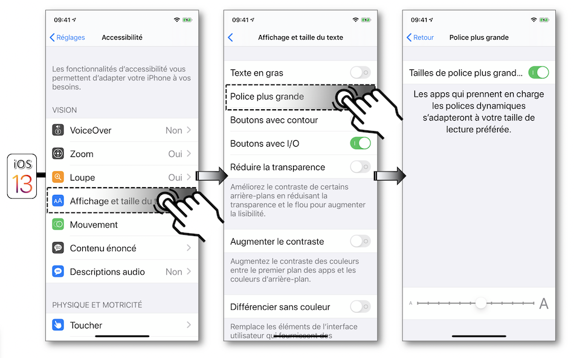
Quelques points sont néanmoins essentiels pour la bonne utilisation du Dynamic Type mis à disposition :
- utiliser impérativement les styles de texte proposés selon la version d'iOS avec laquelle l'application est développée,

- utiliser la police système pour les textes de l’application afin de se faciliter grandement la tâche même si l'utilisation d'autres polices est devenue nettement plus aisée depuis l'arrivée de
UIFontMetricsavec iOS11,
__weak IBOutlet UILabel * fontHeadline;
__weak IBOutlet UILabel * fontFootNote;
//Utilisation de la font native.
fontFootNote.font = [UIFont preferredFontForTextStyle:UIFontTextStyleHeadline];
//Définition de la font pour le titre principal d'une page.
UIFont * fontHead = [UIFont fontWithName:@"Chalkduster" size:30.0];
UIFontMetrics * fontHeadMetrics = [[UIFontMetrics alloc]initForTextStyle:UIFontTextStyleHeadline];
fontHeadline.font = [fontHeadMetrics scaledFontForFont:fontHead];
@IBOutlet weak var fontHeadline: UILabel!
@IBOutlet weak var fontFootNote: UILabel!
//Utilisation de la police native.
fontFootNote.font = .preferredFont(forTextStyle: .headline)
//Définition personnalisée de la police pour le titre principal d'une page.
let fontHead = UIFont(name: "Chalkduster", size: 30.0)
let fontHeadMetrics = UIFontMetrics(forTextStyle: .headline)
fontHeadline.font = fontHeadMetrics.scaledFont(for: fontHead!)
var body: some View {
Text("Un peu de texte")
// Police système
.font(.headline)
// Police customisée
.font(Font.custom("MyFont", size: 18))
// Ou alors une police customisée de définition relative
.font(Font.custom("MyFont", size: 18, relativeTo: .title))
}
}
// SwiftUI permet également de savoir si la taille de texte a changé, et permet d'étendre le composant
// ContentSizeCategory afin de savoir quelle taille de texte est appliquée
// Propriété pour accéder à la taille de texte utilisée
@Environment(\.sizeCategory) var sizeCategory: ContentSizeCategory
// Une extension à définir pour savoir si la taille de etxte est une des tailles "accessibles"
// ou une grosse taille de manière plus générale
extension ContentSizeCategory {
var isAccessible: Bool {
switch self {
case .accessibilityExtraExtraExtraLarge, // 310 %
.accessibilityExtraExtraLarge, // 275 %
.accessibilityExtraLarge, // 235%
.accessibilityLarge, // 190 %
.accessibilityMedium: // 160 %
return true
default:
return false
}
}
var isLargeTextUsed: Bool {
switch self {
case .accessibilityExtraExtraExtraLarge, // 310 %
.accessibilityExtraExtraLarge, // 275 %
.accessibilityExtraLarge, // 235 %
.accessibilityLarge, // 190 %
.accessibilityMedium, // 160 %
.extraExtraExtraLarge, // 135 %
.extraExtraLarge, // 120%
.extraLarge: // 110 %
return true
default:
return false
}
}
}
- penser à écouter la notification UIContentSizeCategoryDidChange qui annonce le changement de la taille du texte à partir des paramètres du téléphone.
Cette tâche est simplifiée depuis iOS10 où l'attribut adjustsFontForContentSizeCategory se charge de la mise à jour automatique de la nouvelle taille de la police système au sein de l'application (cet attribut ne peut s'appliquer aux polices personnalisées qu'avec l'utilisation deUIFontMetricsdepuis iOS11).
Il est aussi possible d'utiliser la méthode traitCollectionDidChange du protocole informelUITraitEnvironmentqui sera automatiquement appelée dès qu'une modification concernant l'environnement de l'interface iOS surviendra (class/content size, portrait/paysage, constraste des couleurs...),
//Écoute de la notification annonçant le changement de taille de la police.
[[NSNotificationCenter defaultCenter] addObserver:self
selector:@selector(methodToBeCalled:)
name:UIContentSizeCategoryDidChangeNotification
object:nil];
//Modification automatique de la taille de la police sans utiliser la notification.
fontHeadline.adjustsFontForContentSizeCategory = YES;
- (void)methodToBeCalled:(NSNotification *)notification {
//Il faut de nouveau affecter la police des éléments impactés lors du traitement de cette notification.
fontFootNote.font = [UIFont preferredFontForTextStyle:UIFontTextStyleFootnote];
}
//Écoute de la notification annonçant le changement de taille de la police.
NotificationCenter.default.addObserver(self,
selector:#selector(methodToBeCalled(notification:)),
name: UIContentSizeCategory.didChangeNotification,
object: nil)
//Modification automatique de la taille de la police sans utiliser la notification.
fontHeadline.adjustsFontForContentSizeCategory = true
@objc func methodToBeCalled(notification: Notification) {
//Il faut de nouveau affecter la police des éléments impactés lors du traitement de cette notification.
fontFootNote.font = UIFont.preferredFont(forTextStyle: .footnote)
}
-
ne pas oublier d'adapter les contraintes graphiques aux éléments susceptibles de voir leur taille modifiée en privilégiant l'utilisation de valeurs dynamiques : penser à paramétrer les éléments inclus dans les navigation/tab/status bar et toolbar qui seront affichés via le Large Content Viewer,
-
penser à adapter le contraste des couleurs à la taille de texte modifiée si nécessaire.
Depuis iOS 15, il est désormais possible de limiter les seuils minimal et maximal de modification de taille avec le Dynamic Type pour un élément UIView grâce à deux nouvelles propriétés : minimumContentSizeCategory et maximumContentSizeCategory.
Il est toutefois nécessaire de bien garder à l'esprit que cette nouveauté iOS 15 n'est à utiliser que dans des situations spécifiques qui utilisent déjà le Dynamic Type mais dont les représentations extrêmes seraient plutôt néfastes à l'expérience utilisateur.
Trait d'union de troncature #
L'utilisation du Dynamic Type exposé dans le paragraphe précédent s'accompagne indéniablement de la troncature de mots en fonction du grossissement de texte choisi par l'utilisateur.
Malheureusement, cela n'est pas pris en compte nativement par le système et seule une intervention au niveau programmatique permet d'obtenir ce rendu visuel particulièrement apprécié.
Avec UIKit, l'idée est de spécifier l'utilisation d'un NSMutableAttributedString auquel on ajoute une propriété de type NSMutableParagraphStyle comme indiqué par l'exemple ci-dessous.
Toutefois, ces API ne sont pas encore disponibles avec SwiftUI à l'heure où ces lignes sont écrites ; il convient donc d'aborder le problème différement.
@interface TruncationHyphen () {
__weak IBOutlet UILabel * myLabel;
}
@end
@implementation TruncationHyphen
- (void)viewDidLoad {
[super viewDidLoad];
NSString * myString = @"anticonstitutionnellement";
NSMutableParagraphStyle * paraph = [[NSMutableParagraphStyle alloc] init];
paraph.hyphenationFactor = 1.0;
UIFont * myFont = [UIFont fontWithName:@"HoeflerText-Black" size:18.0];
UIFont * myTextFont = [[UIFontMetrics metricsForTextStyle:UIFontTextStyleTitle1] scaledFontForFont:myFont];
NSDictionary * attributesDictionary = @{NSFontAttributeName:myTextFont};
NSMutableAttributedString * myText = [[NSMutableAttributedString alloc]initWithString:myString
attributes:attributesDictionary];
[myText addAttribute:NSParagraphStyleAttributeName
value:paraph
range:NSMakeRange(0, 1)];
myLabel.attributedText = myText;
}
@end
class TruncationHyphen: UIViewController {
@IBOutlet weak var myLabel: UILabel!
override func viewDidLoad() {
super.viewDidLoad()
let myString = "anticonstitutionnellement"
let paraph = NSMutableParagraphStyle()
paraph.hyphenationFactor = 1.0
let myTextFont = UIFontMetrics(forTextStyle: .title1).scaledFont(for:UIFont(name:"HoeflerText-Black", size:18)!)
let myText = NSMutableAttributedString(string:myString,
attributes: [.font: myTextFont])
myText.addAttribute(.paragraphStyle,
value: paraph,
range: NSMakeRange(0,1))
myLabel.attributedText = myText
}
}
/*
* Le code source ci-dessous a été largement inspiré du package Swift HyphenableText,
* dont Alessio Moiso est titulaire du copyright.
* Le code source est disponible sous licence MIT à l'adresse https://github.com/MrAsterisco/HyphenableText.
* Il est de bon ton de citer l'auteur si le code ci-dessous est copié/collé dans vos projets.
*/
// Une vue SwiftUI récupérant la locale et le texte à afficher
struct HyphenableText: View {
@Environment(\.locale) private var locale
let text: String
let minimumWordLength: Int
init(_ text: String, ignoreWordsShorterThan minimumWordLength: Int = 0) {
self.text = text
self.minimumWordLength = minimumWordLength
}
var body: some View {
Text(text
.hyphenateByWord(
minimumWordLength: minimumWordLength,
withLocale: locale
)
)
}
}
// Quelques méthodes utilsiateurs ajoutées par extension à String-
extension String {
/// Le symbole du trait d'union
static let hyphenSymbol = "\u{00AD}"
func hyphenateByWord(minimumWordLength: Int = 0,
withLocale locale: Locale = .autoupdatingCurrent) -> Self {
var splits: [String] = split(separator: " ",
omittingEmptySubsequences: false).map({ String($0) })
for (index, substring) in splits.enumerated() {
if substring.count >= minimumWordLength {
splits[index] = substring.hyphenated(withLocale: locale)
}
}
return splits.joined(separator: " ")
}
func hyphenated(withLocale locale: Locale = .autoupdatingCurrent,
hyphenCharacter: String = Self.hyphenSymbol) -> Self {
let localeRef = locale as CFLocale
guard CFStringIsHyphenationAvailableForLocale(localeRef) else {
return self
}
let mutableSelf = NSMutableString(string: self)
var hyphenationLocations = Array(repeating: false, count: count)
let range = CFRangeMake(0, count)
for i in 0..< count {
let nextLocation = CFStringGetHyphenationLocationBeforeIndex(
mutableSelf as CFString,
i,
range,
.zero,
localeRef,
nil
)
if nextLocation >= 0 && nextLocation < count {
hyphenationLocations[nextLocation] = true
}
}
for i in (0..< count).reversed() {
guard hyphenationLocations[i] else { continue }
mutableSelf.insert(hyphenCharacter, at: i)
}
return mutableSelf as String
}
}
Taille des éléments graphiques #
Tout comme la taille des textes est adaptable selon les réglages d'accessibilité (voir la rubrique précédente), la taille des images ainsi que celle des éléments d'une barre de tabulation ou d'outils l'est aussi mais uniquement depuis iOS11 avec Xcode 9.
En suivant les différentes étapes ci-dessous, vous obtiendrez l'effet défini dans la partie Description et présenté graphiquement en exemple à la fin de cette rubrique :
-
Sous Xcode, importer l'image à grossir au format
pdfà la résolution x1 dans le cataloguexcassets, -
Dans l'Image Set qui vient d'être créé, cocher la case
Preserve Vector Dataet spécifierSingle Scale:

-
Si un storyboard est utilisé pour intégrer l'image, cocher
Adjusts Image Sizedans la partie Image View, sinon mettre àtruela propriétéadjustsImageSizeForAccessibilityContentSizeCategoryde l'image si cette opération se fait de façon programmatique :
-
Si une barre de tabulation ou une barre d'outils est aussi à intégrer dans l'application, renouveler les 3 étapes précédentes pour chacune des images à utiliser en grossissement de l'onglet au milieu de l'écran puis associer l'image souhaitée aux différents éléments impactés :
ATTENTION : s'assurer que les contraintes mises en place initialement permettent toujours un affichage cohérent et désiré après grossissement.
De façon à pouvoir tester à la fois le grossissement des images et celui d'un onglet sélectionné, on crée une application contenant une barre de tabulations contenant 2 onglets dont seul le second nous intéresse et affiche l'image du logo Orange.
Après modification du grossissement de texte dans les réglages (voir la rubrique précédente), on revient dans l'application pour constater :
-
une taille de l'image Orange nettement plus conséquente,
-
au milieu de l'écran, l'affichage grossi de l'onglet sur lequel on doit appuyer de façon continue pour provoquer cette apparition ⟹ fonctionnalité Large Content Viewer disponible depuis iOS 11.
Large Content Viewer #
Le Dynamic Type permet le grossissement de tous les éléments graphiques avec une particularité pour les éléments {navigation/tab/status bars + toolbars} pour lesquels un appui long est nécessaire pour afficher un HUD en plein écran appelé Large Content Viewer (voir Taille des éléments graphiques).
Disponible depuis iOS 11, cette fonctionnalité était confinée aux seuls éléments UIKit mentionnés précédemment jusqu'à iOS 13 où son utilisation est désormais possible sur tout élément graphique qui se conforme au protocole UILargeContentViewerItem.
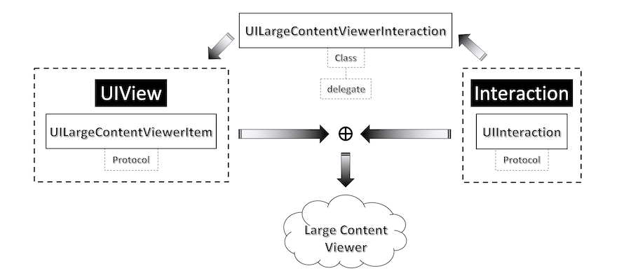
Avant d'implémenter le Large Content Viewer, il y a deux points importants qu'il est nécessaire de préciser :
-
cette fonctionnalité n'est disponible que pour les cinq dernières tailles de grossissement activées en accessibilité dans les réglages du terminal,
-
avoir à l'esprit que les modifications de taille liées au
DynamicTypedoivent toujours être implémentées de façon P.R.I.O.R.I.T.A.I.R.E. : leLargeContentViewern'est à utiliser qu'à partir du moment où l'élément graphique impacté ne peut pas répondre aux changements souhaités ⟹ recommandation Apple.
Si le grossissement extrême d'un élément graphique risque de dégrader l'expérience utilisateur, on peut très simplement implémenter le Large Content Viewer sur cette vue pour obtenir le résultat grossi eu milieu d'écran :
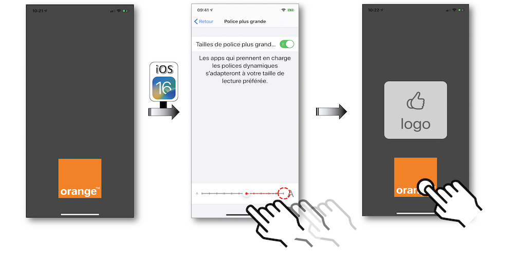
@interface LogoViewController ()
@property (weak, nonatomic) IBOutlet UIImageView * myView;
@end
NS_ASSUME_NONNULL_BEGIN
@implementation LogoViewController
- (void)viewDidLoad {
[super viewDidLoad];
_myView.showsLargeContentViewer = YES;
_myView.largeContentTitle = @"logo";
_myView.largeContentImage = [UIImage systemImageNamed:@"hand.thumbsup"];
[_myView addInteraction:[[UILargeContentViewerInteraction alloc] init]];
}
@end
NS_ASSUME_NONNULL_END
class LogoViewController: UIViewController {
@IBOutlet weak var myView: UIImageView!
override func viewDidAppear(_ animated: Bool) {
super.viewDidAppear(animated)
myView.isUserInteractionEnabled = true
myView.showsLargeContentViewer = true
myView.largeContentTitle = "logo"
myView.largeContentImage = UIImage(systemName: "hand.thumbsup")
myView.addInteraction(UILargeContentViewerInteraction())
}
}
Image(systemName: "hand.thumbsup")
.accessibilityShowsLargeContentViewer {
Label("logo", systemImage: "hand.thumbsup")
}
De la même façon, pour un élément cliquable comme un bouton dont le grossissement pourrait devenir problématique, il est tout à fait possible d'utiliser cette fonctionnalité pour afficher son contenu et s'assurer que son action sera déclenchée dès que le doigt sera relevé :
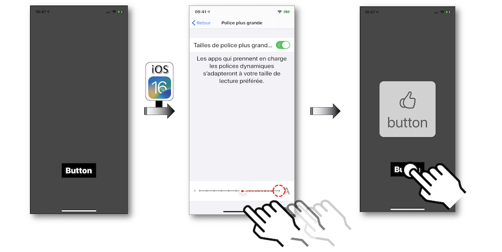
@interface ButtonViewController ()
@property (weak, nonatomic) IBOutlet UIButton * myButton;
@end
NS_ASSUME_NONNULL_BEGIN
@implementation ButtonViewController
- (void)viewDidLoad {
[super viewDidLoad];
_myButton.showsLargeContentViewer = YES;
_myButton.largeContentTitle = @"button";
_myButton.largeContentImage = @"hand.thumbsup";
[_myButton addInteraction:[[UILargeContentViewerInteraction alloc] init]];
}
- (IBAction)tapButton:(UIButton *)sender {
//Actions à réaliser dès que le bouton est activé.
}
@end
NS_ASSUME_NONNULL_END
class ButtonViewController: UIViewController {
@IBOutlet weak var myButton: UIButton!
override func viewDidAppear(_ animated: Bool) {
super.viewDidAppear(animated)
myButton.showsLargeContentViewer = true
myButton.largeContentTitle = "button"
myButton.largeContentImage = UIImage(systemName: "hand.thumbsup")
myButton.addInteraction(UILargeContentViewerInteraction())
}
@IBAction func tapButton(_ sender: UIButton) {
//Actions à réaliser dès que le bouton est activé.
}
}
Button {
// L'action sera déclenchée quand le bouton sera relaché
} label: {
Image(systemName: "hand.thumbsup")
}
.accessibilityShowsLargeContentViewer {
Label("logo", systemImage: "hand.thumbsup")
}
Avec UIKit, lorsque la gestuelle 'appui long' est déjà implémentée sur l'élément impacté, il est nécessaire d'utiliser la méthode gestureRecognizer(_:shouldRecognizeSimultaneouslyWith:) qui permettra de mettre en place concomitamment les deux gestuelles.
Pour SwftUI, il faudra se tourner vers l'API Gestures.
Valeurs continûment ajustables #
Des éléments graphiques comme le picker, le stepper ou encore le slider permettent de changer de façon continue la valeur qu'ils proposent de modifier.
Quand on ne voit pas la modification dynamique se faire ou qu'on n'en est pas informé vocalement, il devient très compliqué de pouvoir se rendre compte de ce qui se passe.
La méthodologie utilisée pour solutionner cette problématique pour une personne non voyante utilisant VoiceOver reste la même pour ces trois éléments, c'est pourquoi seul le cas du stepper sera traité.
L'implémentation de cet objet graphique est relativement simple mais son utilisation avec VoiceOver requiert quelques ajustements pour obtenir un meilleur parcours utilisateur.
Si on crée un stepper auquel on ajoute un label pour afficher sa valeur, on obtient un ensemble d'éléments disjoints.
À partir de là, on s'aperçoit que le focus doit être déplacé pour :
-
atteindre chacun des deux éléments permettant d'augmenter ou de diminuer la valeur,
-
connaître la valeur obtenue via le
label.
De plus, il n'y a aucune indication de changement de la valeur en temps réel.
Certes, rien n'est bloquant mais, si l'on souhaite réellement mettre en place cet objet avec un rendu le plus fluide possible, ces quelques remarques conduisent tout naturellement à concevoir différemment cet exemple pourtant si simple.
L'idée est de pouvoir changer la valeur du stepper, être informé de son changement et d'en connaître la valeur par le biais d'un unique objet.
Il faut donc regrouper le stepper et le label (à l'aide d'une StackView par exemple) puis associer UIAccessibilityTraitAdjustable à ce nouveau groupe accessible.
Ce nouveau trait va permettre de modifier de façon continue la valeur de l'objet auquel il est associé en implémentant OBLIGATOIREMENT les méthodes accessibilityIncrement() et accessibilityDecrement().
On élimine ainsi toutes les contraintes rencontrées initialement et on obtient, en plus, un hint lié à ce nouveau trait qui indique la manipulation nécessaire au bon fonctionnement.
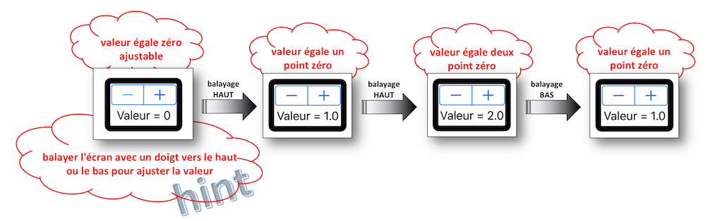
- Pour aboutir à ce résultat, on définit tout d'abord une classe conteneur {stepper +
label} qui va permettre la délégation pour la modification ultérieure de la valeur.
-===== StepperWrapper.h =====-
NS_ASSUME_NONNULL_BEGIN
@class StepperWrapper;
@protocol AdjustableForAccessibilityDelegate <NSObject>
- (void)adjustableDecrementForView:(StepperWrapper *)view;
- (void)adjustableIncrementForView:(StepperWrapper *)view;
@end
@interface StepperWrapper : UIStackView
@property(nonatomic,weak) id <AdjustableForAccessibilityDelegate> delegate;
@end
NS_ASSUME_NONNULL_END
-===== StepperWrapper.m =====-
NS_ASSUME_NONNULL_BEGIN
@implementation StepperWrapper
- (instancetype)initWithCoder:(NSCoder *)coder {
self = [super initWithCoder:coder];
self.isAccessibilityElement = YES;
self.accessibilityTraits = UIAccessibilityTraitAdjustable;
return self;
}
- (void)accessibilityDecrement {
if ([_delegate respondsToSelector:@selector(adjustableDecrementForView:)]) {
[_delegate adjustableDecrementForView:self];
}
}
- (void)accessibilityIncrement {
if ([_delegate respondsToSelector:@selector(adjustableIncrementForView:)]) {
[_delegate adjustableIncrementForView:self];
}
}
@end
NS_ASSUME_NONNULL_END
protocol AdjustableForAccessibilityDelegate: class {
func adjustableDecrementFor(_ view: StepperWrapper)
func adjustableIncrementFor(_ view: StepperWrapper)
}
class StepperWrapper: UIStackView {
weak var delegate: AdjustableForAccessibilityDelegate?
override init(frame: CGRect) {
super.init(frame: frame)
}
required init(coder: NSCoder) {
super.init(coder: coder)
isAccessibilityElement = true
accessibilityTraits = .adjustable
}
override func accessibilityDecrement() {
delegate?.adjustableDecrementFor(self)
}
override func accessibilityIncrement() {
delegate?.adjustableIncrementFor(self)
}
}
struct ContentView: View {
@State private var value = 5
VStack {
Text("Value: \(value)")
Button("-") {
guard value > 0 else { return }
value -= 1
}
Button("+") {
guard value < 10 else { return }
value += 1
}
}
.accessibilityElement()
.accessibilityLabel("Valeur")
.accessibilityValue(String(value))
.accessibilityAdjustableAction { direction in
switch direction {
case .decrement:
guard value > 0 else { break }
value -= 1
case .increment:
guard value < 10 else { break }
value += 1
@unknown default:
break
}
}
}
- Ensuite avec UIKit, il faut redéfinir les 2 méthodes du protocole implémenté pour indiquer ce qu'elles doivent réaliser avant de mettre à jour la valeur modifiée et de la présenter vocalement dans le ViewController.
NS_ASSUME_NONNULL_BEGIN
@interface ContinuousAdjustableValues () <AdjustableForAccessibilityDelegate>
@property (weak, nonatomic) IBOutlet StepperWrapper * stepperStackViewAccess;
@property (weak, nonatomic) IBOutlet UIStepper * stepperAccess;
@property (weak, nonatomic) IBOutlet UILabel * stepperValueAccess;
@end
@implementation ContinuousAdjustableValues
- (void)viewWillAppear:(BOOL)animated {
[super viewWillAppear:animated];
_stepperStackViewAccess.delegate = self;
_stepperStackViewAccess.accessibilityLabel = @"augmenter ou diminuer la valeur";
_stepperStackViewAccess.accessibilityValue = _stepperValueAccess.text;
}
- (void)adjustableDecrementForView:(StepperWrapper *)view {
_stepperAccess.value -= _stepperAccess.stepValue;
[self updateStepperValue];
}
- (void)adjustableIncrementForView:(StepperWrapper *)view {
_stepperAccess.value += _stepperAccess.stepValue;
[self updateStepperValue];
}
- (void) updateStepperValue {
_stepperValueAccess.text = [NSString stringWithFormat:@"Valeur = %0.1f",_stepperAccess.value];
_stepperStackViewAccess.accessibilityValue = _stepperValueAccess.text;
}
@end
NS_ASSUME_NONNULL_END
class ContinuousAdjustableValues: UIViewController, AdjustableForAccessibilityDelegate {
@IBOutlet weak var stepperStackViewAccess: StepperWrapper!
@IBOutlet weak var stepperAccess: UIStepper!
@IBOutlet weak var stepperValueAccess: UILabel!
override func viewDidLoad() {
super.viewDidLoad()
stepperStackViewAccess.delegate = self
stepperStackViewAccess.accessibilityLabel = "augmenter ou diminuer la valeur"
stepperStackViewAccess.accessibilityValue = stepperValueAccess.text
}
func adjustableDecrementFor(_ view: StepperWrapper) {
stepperAccess.value -= stepperAccess.stepValue
updateStepperValue()
}
func adjustableIncrementFor(_ view: StepperWrapper) {
stepperAccess.value += stepperAccess.stepValue
updateStepperValue()
}
private func updateStepperValue() {
stepperValueAccess.text = "Valeur = \(stepperAccess.value)"
stepperStackViewAccess.accessibilityValue = stepperValueAccess.text
}
}
Actions personnalisées #
Certaines manipulations basiques peuvent devenir un vrai casse-tête pour se fondre dans une navigation sereine avec VoiceOver et se transformer en éléments parfaitement accessibles.
Un exemple probant est celui du mail iOS natif qui permet d'accéder à un ensemble d'actions.
La gestuelle utilisée sans utilisation du lecteur d'écran ne peut pas convenir à VoiceOver pour obtenir le résultat désiré : un balayage vers la gauche sélectionnerait l'élément accessible suivant au lieu de proposer les actions à réaliser sur le mail sélectionné.
Dans un cas comme celui-là, il conviendrait de réaliser les opérations décrites dans l'onglet Exemple pour donner accès à ces opérations si elles n'étaient pas implémentées nativement.
Ici, toutes les actions sont directement disponibles dès le premier écran pour faciliter grandement l'expérience utilisateur en arrivant rapidement aux resultats souhaités.
Pour un composant développé au sein d'une application, il est très fortement recommandé de réaliser ce même type de parcours en s'appuyant sur le modèle fourni dans l'onglet Exemple.
iOS 13 a introduit un nouveau comportement des actions personnalisées : seul le premier élément avec des actions sera vocalisé, tous les autres disposant du même jeu d'actions resteront muets afin d'éviter les annonces répétitives des "actions disponibles".
Dès que la liste d'actions est différente sur un élément, l'annonce reprend sur ce dernier de façon à faire comprendre à l'utilisateur qu'un nouveau jeu d'actions est à disposition.
Ce comportement qui n'a jamais été présenté ni expliqué par Apple n'est plus d'actualité en iOS 15 pour revenir au fonctionnement nominal iOS 12.
⚠️ ATTENTION : vérifier l'activation des actions personnalisées dans les réglages utilisateurs via 'Réglages - Accessibilité - VoiceOver - Verbosité - Actions' avec Énoncer sélectionné. ⚠️
Si ce n'est pas le cas, l'implémentation des actions personnalisées sera totalement ignorée par VoiceOver.
Que ce soit pour le lecteur d'écran ou le contrôle de sélection, la réalisation programmatique est exactement la même pour obtenir les actions souhaitées : l'exemple suivant sera illustré pour VoiceOver.
Une solution consiste à associer à l'élément sélectionné un tableau d'actions dont le système se chargera d'indiquer automatiquement la présence en informant vocalement l'utilisateur de leur disponibilité.
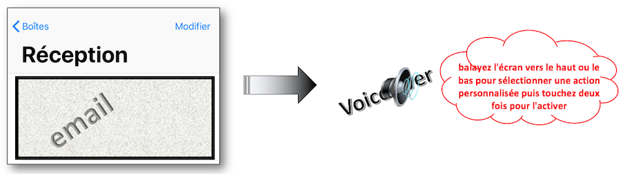
@interface CustomActions ()
@property (weak, nonatomic) IBOutlet UILabel * persoElt;
@end
@implementation CustomActions
- (void)viewDidLoad {
[super viewDidLoad];
UIAccessibilityCustomAction * a11yOptionsAction = [[UIAccessibilityCustomAction alloc]initWithName:@"options"
target:self
selector:@selector(optionsAction)];
UIAccessibilityCustomAction * a11yDrapeauAction = [[UIAccessibilityCustomAction alloc]initWithName:@"drapeau"
target:self
selector:@selector(drapeauAction)];
UIAccessibilityCustomAction * a11yCorbeilleAction = [[UIAccessibilityCustomAction alloc]initWithName:@"corbeille"
target:self
selector:@selector(corbeilleAction)];
_persoElt.accessibilityCustomActions = @[a11yOptionsAction,
a11yDrapeauAction,
a11yCorbeilleAction];
}
- (BOOL)optionsAction {
//Code à implémenter pour cette action.
return YES;
}
- (BOOL)drapeauAction {
//Code à implémenter pour cette action.
return YES;
}
- (BOOL)corbeilleAction {
//Code à implémenter pour cette action.
return YES;
}
@end
class CustomActions: UIViewController {
@IBOutlet weak var persoElt: UILabel!
override func viewDidLoad() {
super.viewDidLoad()
let a11yOptionsAction = UIAccessibilityCustomAction(name: "options",
target: self,
selector: #selector(optionsAction))
let a11yDrapeauAction = UIAccessibilityCustomAction(name: "drapeau",
target: self,
selector: #selector(drapeauAction))
// Nouvelle syntaxe iOS 13 avec une 'closure'.
let a11yCorbeilleAction = UIAccessibilityCustomAction(name: "corbeille",
actionHandler: { (customAction: UIAccessibilityCustomAction) -> Bool in
//Code à implémenter pour cette action.
return true
})
persoElt.accessibilityCustomActions = [a11yOptionsAction,
a11yDrapeauAction,
a11yCorbeilleAction]
}
@objc func optionsAction() -> Bool {
//Code à implémenter pour cette action.
return true
}
@objc func drapeauAction() -> Bool {
//Code à implémenter pour cette action.
return true
}
}
var body: some View {
Text("Une vue avec des actions personnalisées")
.accessibilityElement()
.accessibilityAction(named: "options") {
print("Action OPTIONS sélectionnée")
}
.accessibilityAction(named: "drapeau") {
print("Action DRAPEAU sélectionnée")
}
.accessibilityAction(named: "corbeille") {
print("Action CORBEILLE sélectionnée")
}
}
Le code implémenté ci-dessus permet d'obtenir le résultat suivant par balayages successifs sur l'élément accessible sélectionné :
Pour plus d'informations sur ce sujet, ne pas hésiter à visualiser la vidéo Utiliser les actions personnalisées dont le résumé détaillé se trouve dans la section WWDC de ce site.
Rotor personnalisé #
Depuis iOS10, il est possible d'ajouter une action spécifique au rotor de VoiceOver en s'appuyant sur la classe UIAccessibilityCustomRotor dont la construction prend en compte 2 éléments principaux en entrée :
-
UIAccessibilityCustomRotorSearchPredicate : définit la logique à mettre en oeuvre selon le type de balayage effectué sur l'écran,
-
UIAccessibilityCustomRotorItemResult : correspond à l'élément issu de la logique précedente.
Le code fourni ci-dessous permet de compter et d'afficher le nombre de balayages haut et bas (finalité inutile avec le rotor mais qui permet de mettre en avant sa création programmatique).
@interface CustomRotor ()
@property (weak, nonatomic) IBOutlet UILabel * rotorTitle;
@property (weak, nonatomic) IBOutlet UILabel * upLabel;
@property (weak, nonatomic) IBOutlet UILabel * downLabel;
@end
@implementation CustomRotor
static NSInteger flicksUp;
static NSInteger flicksDown;
+ (void)initialize {
flicksUp = 0;
flicksDown = 0;
}
- (void)viewDidLoad {
[super viewDidLoad];
UIAccessibilityCustomRotor * rotor = [self buildMyRotor:@"Rotor info"];
self.accessibilityCustomRotors = @[rotor];
}
- (UIAccessibilityCustomRotor *)buildMyRotor:(NSString * _Nonnull)name{
return [[UIAccessibilityCustomRotor alloc]initWithName:name
itemSearchBlock:^UIAccessibilityCustomRotorItemResult * _Nullable(UIAccessibilityCustomRotorSearchPredicate * _Nonnull predicate) {
if (predicate.searchDirection == UIAccessibilityCustomRotorDirectionNext) {
flicksDown += 1;
self.downLabel.text = [NSString stringWithFormat:@"%ld",(long)flicksDown];
} else {
flicksUp += 1;
self.upLabel.text = [NSString stringWithFormat:@"%ld",(long)flicksUp];
}
return [[UIAccessibilityCustomRotorItemResult alloc] initWithTargetElement:self.rotorTitle
targetRange:nil];
}];
}
@end
class CustomRotor: UIViewController {
@IBOutlet weak var rotorTitle: UILabel!
static var flicksUp = 0
@IBOutlet weak var upLabel: UILabel!
static var flicksDown = 0
@IBOutlet weak var downLabel: UILabel!
override func viewDidLoad() {
super.viewDidLoad()
let rotor = buildMyRotor("Rotor info")
self.accessibilityCustomRotors = [rotor]
}
func buildMyRotor(_ name: String) -> UIAccessibilityCustomRotor {
return UIAccessibilityCustomRotor.init(name: name,
itemSearch: { predicate -> UIAccessibilityCustomRotorItemResult? in
if (predicate.searchDirection == UIAccessibilityCustomRotor.Direction.next) {
CustomRotor.flicksDown += 1
self.downLabel.text = String(CustomRotor.flicksDown)
} else {
CustomRotor.flicksUp += 1
self.upLabel.text = String(CustomRotor.flicksUp)
}
return UIAccessibilityCustomRotorItemResult.init(targetElement:self.rotorTitle,
targetRange: nil)
})
}
}
Le code implémenté ci-dessus permet d'obtenir le résultat suivant :

L'utilisation d'un rotor personnalisé n'est pas du tout naturelle au sein d'une application, c'est pourquoi il est primordial de bien annoncer son fonctionnement et sa finalité pour faciliter au maximum l'expérience utilisateur.
La majeure différence du rotor avec les actions personnalisées ou encore les valeurs continûment ajustables réside dans sa possible utilisation quel que soit l'élément sélectionné sur l'écran.
Cependant, si l'élément sélectionné est ajustable ou contient des actions personnalisées, ses actions prévaudront sur celles du rotor.
L'implémentation d'une telle fonctionnalité au sein d'une application est donc à envisager selon des besoins bien spécifiques dont le seul objectif doit être de faciliter l'expérience utilisateur.
Ces exemples ne sont valables que pour UIKit. En effet, l'API Swift à l'heure de l'écriture de ces lignes n'est pas isofonctionnelle avec l'API UIKit ; ainsi il n'est pas possible d'avoir un exemple om une vue est mise à jour par glissement vers le haut ou vers le bas du doigt sur le rotor.
Toutefois il est possible de définir un rotor en SwiftUI avec la méthode accessibilityRotor et AccessibilityRotorEntry.
Options d’accessibilité #
Plusieurs fonctions du framework UIKit permettent de connaître le statut des options d'accessibilité qui peut être modifié dans les réglages du terminal.
La plus utile est certainement celle qui permet de savoir si VoiceOver est activé au moment de l’appel (UIAccessibilityIsVoiceOverRunning).
Une présentation très visuelle de certaines fonctions, peut-être moins utiles à première vue, est faite lors d'une vidéo WWDC dont le contenu est parfaitement détaillé sur ce site.
BOOL isVoiveOverRunning = (UIAccessibilityIsVoiceOverRunning() ? 1 : 0);
BOOL isSwitchControlRunning = (UIAccessibilityIsSwitchControlRunning() ? 1 : 0);
NSLog(@"VoiceOver vaut %d et SwitchControl vaut %d.", isVoiveOverRunning, isSwitchControlRunning);
let isVoiceOverRunning = (UIAccessibility.isVoiceOverRunning ? 1 : 0)
let isSwitchControlRunning = (UIAccessibility.isSwitchControlRunning ? 1 : 0)
print("VoiceOver vaut \(isVoiceOverRunning) et SwichControl vaut \(isSwitchControlRunning).")
// Booléen pour savoir si une option d'accessibilité est activée
@Environment(\.accessibilityEnabled) private var accessibilityEnabled
// Booléen pour savoir si Voice Over est activé
@Environment(\.accessibilityVoiceOverEnabled) private var voiceOverEnabled
// Booléen pour savoir si le contrôle de sélection est activé
@Environment(\.accessibilitySwitchControlEnabled) private var switchControlEnabled
Le système iOS envoie un certain nombre d’événements d’accessibilité à destination des applications lors de la modification des options d’accessibilité.
Par exemple, si VoiceOver est désactivé durant l’utilisation de l’application, celle-ci recevra l’événement UIAccessibilityVoiceOverStatusDidChangeNotification, ce qui peut être très utile couplé à la fonction UIAccessibilityIsVoiceOverRunning grâce à laquelle on peut exécuter un traitement particulier quand VoiceOver est activé.
Mais que se passe-t-il si VoiceOver est désactivé alors que ce traitement a déjà eu lieu ?
C’est là que les événements système peuvent être utilisés et, en restant à leur écoute, il est possible d’appliquer des traitements spécifiques de manière dynamique.
Dans l'exemple suivant, on appelle une méthode spécifique au moment où le statut de VoiceOver ou du Switch Control change.
- (void)viewDidAppear:(BOOL)animated {
[super viewDidAppear:animated];
[[NSNotificationCenter defaultCenter] addObserver:self
selector:@selector(methodToBeCalled:)
name:UIAccessibilitySwitchControlStatusDidChangeNotification
object:nil];
[[NSNotificationCenter defaultCenter] addObserver:self
selector:@selector(methodToBeCalled:)
name:UIAccessibilityVoiceOverStatusDidChangeNotification
object:nil];
}
- (void)methodToBeCalled:(NSNotification *)notification {
NSArray * checkStatus = @[@"NOK", @"OK"];
NSLog(@"SWITCH CONTROL est %@ et VOICE OVER est %@",
checkStatus[UIAccessibilityIsSwitchControlRunning()],
checkStatus[UIAccessibilityIsVoiceOverRunning()]);
}
override func viewDidAppear(_ animated: Bool) {
super.viewDidAppear(animated)
NotificationCenter.default.addObserver(self,
selector: #selector(methodToBeCalled(notification:)),
name: UIAccessibility.switchControlStatusDidChangeNotification,
object: nil)
NotificationCenter.default.addObserver(self,
selector: #selector(methodToBeCalled(notification:)),
name: UIAccessibility.voiceOverStatusDidChangeNotification,
object: nil)
}
@objc private func methodToBeCalled(notification: Notification) {
let switchControlStatus = (UIAccessibility.isSwitchControlRunning ? "OK" : "NOK")
let voiceOverStatus = (UIAccessibility.isVoiceOverRunning ? "OK" : "NOK")
print("SWITCH CONTROL est \(switchControlStatus) et VOICE OVER est \(voiceOverStatus).")
}
Tous les événements et les options d'accessibilité sont disponibles sur la documentation officielle d'Apple.
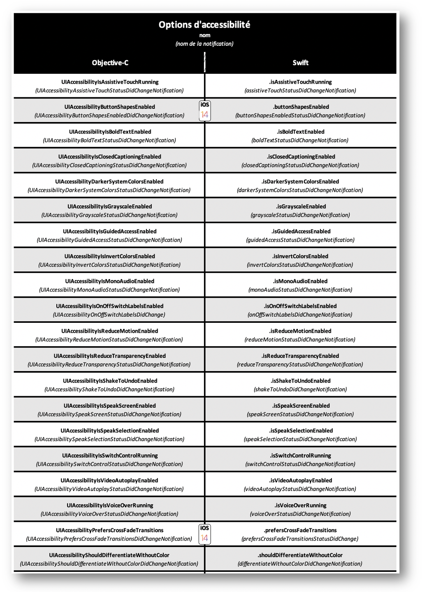
-
Options d'accessibilité (partie conception iOS de ce site)
Barre de navigation #
Vocalisation synthétisée #
L'utilisation d'une voix synthétisée peut se faire dans bon nombre de cas non nécessairement liés à l'accessibilité mais, dans ce cadre, il est important de noter que cette fonctionnalité ne remplace absolument pas VoiceOver mais peut judicieusement compléter son implémentation selon les configurations rencontrées (la voix synthétisée peut chevaucher celle du lecteur d'écran).
Très peu d'éléments sont nécessaires pour créer rapidement une vocalisation synthétisée :
- Le texte à fournir : se présente sous forme d'instance `AVSpeechUtterance` comprenant une propriété `voice` typée `AVSpeechSynthesisVoice`,
- Le synthétiseur : instance `AVSpeechSynthesizer` qui se charge de traiter le texte à fournir en assurant un contrôle d'événements grâce au protocole `AVSpeechSynthesizerDelegate`.
Pour assurer la vocalisation complète d'instances AVSpeechUtterance, il est primordial de conserver l'instance AVSpeechSynthesizer jusqu'à la fin de l'ensemble de la vocalisation.
L'exemple suivant va permettre de définir le débit vocal, la hauteur tonale ainsi que le volume de la voix pour chaque type de texte passé au synthétiseur vocal tout en permettant aussi de :
- mettre en avant le mot vocalisé grâce au protocole `AVSpeechSynthesizerDelegate`,
- réaliser une pause et repartir de l'endroit d'où l'on vient avec des méthodes d'instance `AVSpeechSynthesizer`.
@interface SpeechSynthesis() {
NSMutableArray * playerQueue;
AVSpeechSynthesizer * synthesizer;
__weak IBOutlet UILabel * textLabel;
}
@end
NS_ASSUME_NONNULL_BEGIN
@implementation SpeechSynthesis
- (void)viewDidLoad {
[super viewDidLoad];
playerQueue = [[NSMutableArray alloc] init];
synthesizer = [[AVSpeechSynthesizer alloc] init];
}
- (void)viewDidAppear:(BOOL)animated {
[super viewDidAppear:animated];
for (int i = 1 ; i < 11 ; i++) {
NSString * stringNbPrefix = @"phrase numéro ";
NSString * stringNbSuffix = @" de la voix synthétisée.";
NSString * stringNb = [NSString stringWithFormat:@"%@%i%@", stringNbPrefix, i, stringNbSuffix];
AVSpeechUtterance * utterance = [[AVSpeechUtterance alloc] initWithString:stringNb];
utterance.rate = AVSpeechUtteranceDefaultSpeechRate; //débit vocal
utterance.pitchMultiplier = 1.0; //hauteur tonale
utterance.volume = 1.0; //volume de la voix
[playerQueue addObject:utterance];
}
synthesizer.delegate = self;
for (AVSpeechUtterance * utterance in playerQueue) {
[synthesizer speakUtterance:utterance];
}
}
//Méthode du protocole AVSpeechSynthesizerDelegate pour déterminer visuellement le mot vocalisé.
- (void)speechSynthesizer:(AVSpeechSynthesizer *)synthesizer
willSpeakRangeOfSpeechString:(NSRange)characterRange
utterance:(AVSpeechUtterance *)utterance {
NSMutableAttributedString * attributedString = [[NSMutableAttributedString alloc] initWithString:utterance.speechString];
[attributedString addAttribute:NSFontAttributeName
value:[UIFont systemFontOfSize:19.0]
range:characterRange];
NSAttributedString * subString = [attributedString attributedSubstringFromRange:characterRange];
textLabel.attributedText = attributedString;
NSString * output = [NSString stringWithFormat:@"%@%@", @"mot : ", subString.string];
NSLog(@"%@", output);
}
- (IBAction)pauseButton:(UIButton *)sender {
if (synthesizer.isSpeaking == TRUE) {
if ([synthesizer pauseSpeakingAtBoundary:AVSpeechBoundaryImmediate] == TRUE) {
NSLog(@"PAUSE");
} else {
NSLog(@"P.R.O.B.L.È.M.E. avec la PAUSE.");
}
}
}
- (IBAction)resumeButton:(UIButton *)sender {
if (synthesizer.isPaused == TRUE) {
if ([synthesizer continueSpeaking] == TRUE) {
NSLog(@"REPRISE");
} else {
NSLog(@"P.R.O.B.L.È.M.E. avec la REPRISE.");
}
}
}
@end
class SpeechSynthesis: UIViewController, AVSpeechSynthesizerDelegate {
@IBOutlet weak var textLabel: UILabel!
var synthesizer = AVSpeechSynthesizer()
var playQueue = [AVSpeechUtterance]()
override func viewDidAppear(_ animated: Bool) {
super.viewDidAppear(animated)
for i in 1...10 {
let stringNb = "phrase numéro " + String(i) + " de la voix synthétisée."
let utterance = AVSpeechUtterance(string: stringNb)
utterance.rate = AVSpeechUtteranceDefaultSpeechRate //débit vocal
utterance.pitchMultiplier = 1.0 //hauteur tonale
utterance.volume = 1.0 //volume de la voix
playQueue.append(utterance)
}
synthesizer.delegate = self
for utterance in playQueue {
synthesizer.speak(utterance)
}
}
//Méthode du protocole AVSpeechSynthesizerDelegate pour déterminer visuellement le mot vocalisé.
func speechSynthesizer(_ synthesizer: AVSpeechSynthesizer,
willSpeakRangeOfSpeechString characterRange: NSRange,
utterance: AVSpeechUtterance) {
let attributedString = NSMutableAttributedString(string: utterance.speechString)
attributedString.addAttribute(.font,
value: UIFont.boldSystemFont(ofSize: 19),
range: characterRange)
textLabel.attributedText = attributedString
let subString = attributedString.attributedSubstring(from: characterRange)
print("mot : \(subString.string)")
}
@IBAction func pauseAction(_ sender: UIButton) {
if (synthesizer.isSpeaking == true) {
if (synthesizer.pauseSpeaking(at: .immediate) == true) {
print("PAUSE")
} else {
print("P.R.O.B.L.È.M.E. avec la PAUSE.")
}
}
}
@IBAction func resumeAction(_ sender: UIButton) {
if (synthesizer.isPaused == true) {
if (synthesizer.continueSpeaking() == true) {
print("REPRISE")
} else {
print("P.R.O.B.L.È.M.E. avec la REPRISE.")
}
}
}
}
Lorsque des mots ont une consonance bien particulière ou que l'on souhaite réaliser une épellation spécifique, l'utilisation de la phonétique est fortement recommandée pour s'assurer du résultat.
NSMutableAttributedString * attrStr = [[NSMutableAttributedString alloc] initWithString:@"blablabla"
attributes:@{AVSpeechSynthesisIPANotationAttribute:@"mɔ̃.daj.fɔ.nə.fɔ̃.ksjɔ.nə.paʀ.fɛ.tə.ˈmɑ̃"}];
AVSpeechUtterance * utterance = [[AVSpeechUtterance alloc] initWithAttributedString:attrStr];
AVSpeechSynthesizer * synthesizer = [[AVSpeechSynthesizer alloc] init];
[synthesizer speakUtterance:utterance];
let pronunciationKey = NSAttributedString.Key(rawValue: AVSpeechSynthesisIPANotationAttribute)
let attrStr = NSMutableAttributedString(string: "blablabla",
attributes: [pronunciationKey: "mɔ̃.daj.fɔ.nə.fɔ̃.ksjɔ.nə.paʀ.fɛ.tə.ˈmɑ̃"])
let utterance = AVSpeechUtterance(attributedString: attrStr)
let synthesizer = AVSpeechSynthesizer()
synthesizer.speak(utterance)
La génération de cette phonétique peut se faire en passant par les réglages du terminal.
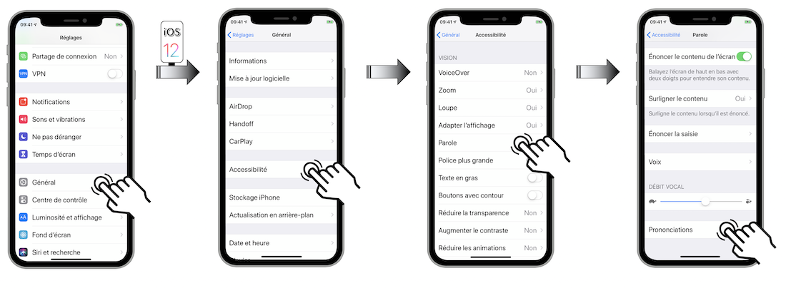
Une fois le menu Prononciations activé...
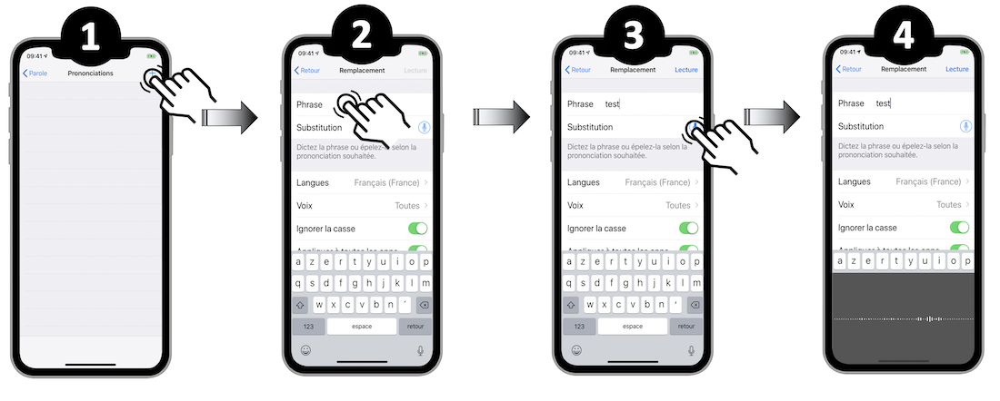
- Sélectionner l'icône '+' pour ajouter une nouvelle phonétique.
- Donner un nom à la nouvelle entrée de façon à la retrouver plus facilement ultérieurement,
- Taper sur l'icône micro,
- Vocaliser la phrase ou le mot souhaité,
- Écouter les différentes propositions faites par le système,
- Valider le choix à l'aide du bouton 'OK' ou annuler pour recommencer l'opération,
- Sélectionner le bouton de retour pour valider la nouvelle phonétique créée,
- Retrouver l'ensemble des éléments ainsi générés sur la page `Prononciations`.
L'ensemble des fonctionnalités proposées par le synthétiseur vocal sont présentées dans une vidéo WWDC (Utiliser une voix synthétisée avec AVSpeechSynthesizer) résumée dans la partie WWDC de ce site.
Contrôle de sélection #
L'utilisation du contrôle de sélection s'articule autour du mode point et du mode élément définis ci-dessous.
La sélection des éléments avec le mode élément fonctionne globalement bien quand les éléments proposés sont natifs et que l'application n'est pas trop compliquée graphiquement.
Il peut très bien arriver que ce mode de sélection ne suive pas la logique souhaitée et ne propose pas les éléments dans l'ordre désiré.
La structure utilisée pour l'exemple est présentée ci-dessous grâce à l'InterfaceBuilder de Xcode :

Afin de personnaliser la sélection de ces éléments, on souhaite :
-
créer 2 groupes {Test_1 + Test_2 ; Btn 5 + Btn 6} sélectionnables en mode élément,
-
avoir uniquement les éléments restants Btn 1 et Btn 2 accessibles séparément.
@interface ViewController ()
@property (weak, nonatomic) IBOutlet UIStackView * btnsParentView;
@property (weak, nonatomic) IBOutlet UIButton * btn1;
@property (weak, nonatomic) IBOutlet UIButton * btn2;
@property (weak, nonatomic) IBOutlet UIButton * btn5;
@property (weak, nonatomic) IBOutlet UIButton * btn6;
@end
@implementation ViewController
- (void)viewDidAppear:(BOOL)animated {
[super viewDidAppear:animated];
//Création du premier groupe 'testWrap' en COMBINANT les boutons 'Test_1' et 'Test_2'.
UIButton * testOneButton = [self.view viewWithTag:1];
UIButton * testTwoButton = [self.view viewWithTag:2];
CGRect testWrapFrame = CGRectUnion(testOneButton.frame, testTwoButton.frame);
UIAccessibilityElement * testWrap = [[UIAccessibilityElement alloc]initWithAccessibilityContainer:self.view];
testWrap.isAccessibilityElement = false;
testWrap.accessibilityFrame = testWrapFrame;
testWrap.accessibilityNavigationStyle = UIAccessibilityNavigationStyleCombined; //Property specifique au contrôle de sélection.
testWrap.accessibilityElements = @[testOneButton, testTwoButton];
//Création du second groupe 'secondGroup' en SÉPARANT les boutons 1 et 2.
CGRect secondGroupRect = CGRectUnion(_btn1.frame, _btn2.frame);
CGRect secondGroupFrame = [_btnsParentView convertRect:secondGroupRect
toView:self.view];
UIAccessibilityElement * secondGroup = [[UIAccessibilityElement alloc]initWithAccessibilityContainer:_btnsParentView];
secondGroup.isAccessibilityElement = false;
secondGroup.accessibilityFrame = secondGroupFrame;
secondGroup.accessibilityNavigationStyle = UIAccessibilityNavigationStyleSeparate;
secondGroup.accessibilityElements = @[_btn1, _btn2];
//Création du troisième groupe 'thirdGroup' en COMBINANT les boutons 5 et 6.
CGRect thirdGroupRect = CGRectUnion(_btn1.frame, _btn2.frame);
CGRect thirdGroupFrame = [_btnsParentView convertRect:thirdGroupRect
toView:self.view];
UIAccessibilityElement * thirdGroup = [[UIAccessibilityElement alloc]initWithAccessibilityContainer:_btnsParentView];
thirdGroup.isAccessibilityElement = false;
thirdGroup.accessibilityFrame = thirdGroupFrame;
thirdGroup.accessibilityNavigationStyle = UIAccessibilityNavigationStyleCombined;
thirdGroup.accessibilityElements = @[_btn5, _btn6];
self.view.accessibilityElements = @[testWrap,
secondGroup,
thirdGroup];
}
@end
class ViewController: UIViewController {
@IBOutlet weak var btnsParentView: UIStackView!
@IBOutlet weak var btn1: UIButton!
@IBOutlet weak var btn2: UIButton!
@IBOutlet weak var btn5: UIButton!
@IBOutlet weak var btn6: UIButton!
override func viewDidAppear(_ animated: Bool) {
super.viewDidAppear(animated)
//Création du premier groupe 'testWrap' en COMBINANT les boutons 'Test_1' et 'Test_2'.
let testOneButton = self.view.viewWithTag(1) as? UIButton
let testTwoButton = self.view.viewWithTag(2) as? UIButton
let testWrapFrame = testOneButton?.frame.union((testTwoButton?.frame)!)
let testWrap = UIAccessibilityElement(accessibilityContainer: self.view!)
testWrap.isAccessibilityElement = false
testWrap.accessibilityFrame = testWrapFrame!
testWrap.accessibilityNavigationStyle = .combined //Property specifique au contrôle de sélection.
testWrap.accessibilityElements = [testOneButton!, testTwoButton!]
//Création du second groupe 'secondGroup' en SÉPARANT les boutons 1 et 2.
let secondGroupRect = btn1.frame.union(btn2.frame)
let secondGroupFrame = btnsParentView.convert(secondGroupRect,
to: self.view)
let secondGroup = UIAccessibilityElement(accessibilityContainer: btnsParentView!)
secondGroup.isAccessibilityElement = false
secondGroup.accessibilityFrame = secondGroupFrame
secondGroup.accessibilityNavigationStyle = .separate
secondGroup.accessibilityElements = [btn1!, btn2!]
//Création du troisième groupe 'thirdGroup' en COMBINANT les boutons 5 et 6.
let thirdGroupRect = btn5.frame.union(btn6.frame)
let thirdGroupFrame = btnsParentView.convert(thirdGroupRect,
to: self.view)
let thirdGroup = UIAccessibilityElement(accessibilityContainer: btnsParentView!)
thirdGroup.isAccessibilityElement = false
thirdGroup.accessibilityFrame = thirdGroupFrame
thirdGroup.accessibilityNavigationStyle = .combined
thirdGroup.accessibilityElements = [btn5!, btn6!]
self.view.accessibilityElements = [testWrap,
secondGroup,
thirdGroup]
}
}
// Les deux premiers boutons auront individuellement le focus Switch Control
Button("Test 1") {} // 1
.accessibility(identifier: "Test 1")
Button("Test 2") {} // 2
.accessibility(identifier: "Test 2")
// Ensuite le focus sera donné à ce bloc
VStack {
// Ces deux autres boutons auront individuellement le focus Switch Control
Group {
Button("Button 1") {} // 3
.accessibility(identifier: "Button 1")
Button("Button 2") {} // 4
.accessibility(identifier: "Button 2")
}.accessibilityElement(children: .combine)
// Ces deux là seront ignorés
Button("Button 3") {}.accessibilityHidden(true)
Button("Button 4") {}.accessibilityHidden(true)
// Ces deux autres auront à la fin le focus Switch Control individuellement
Group {
Button("Button 5") {} // 5
.accessibility(identifier: "Button 5")
Button("Button 6") {} // 6
.accessibility(identifier: "Button 6")
}
.accessibilityElement(children: .combine)
}
.accessibilityElement(children: .combine)
Le rendu de ce code est visualisable ci-dessous :
Les groupes créés permettent d'accéder directement aux éléments qu'ils contiennent dès qu'ils sont activés.
Vocalisation du nom de l'application #
Même s'il est possible à un utilisateur de personnaliser manuellement la vocalisation du nom d'une application via une gestuelle spécifique VoiceOver, cette manipulation est aussi réalisable en programmation.
L'idée est de pouvoir vocaliser proprement les sigles présents sur les icônes applicatives qui sont très expressifs visuellement mais textuellement incompréhensibles.
CFBundleSpokenName est la clé permettant d'adapter la vocalisation du texte définissant le nom d'une application qui, dans un cadre d'internationalisation, peut prendre différentes valeurs selon les langues visées.
On passe alors d'un sigle incompréhensible avec une icône éventuellement plus parlante à une expression parfaitement compréhensible par un utilisateur pour lequel l'icône n'est peut-être pas du tout accessible.
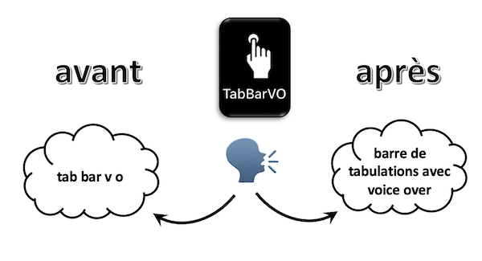